FOREWORD
The Colourful world of children is full of excitement and spectacular thoughts! Their imaginative power can even attract the wild creatures to accompany them in a friendly manner. Their enthusiasum and innovative prescription can even trigger the non-living entities and enchant the poetic Tamil. It is nothing but a bundle of joy blended with emotions when you travel into their creative world.
We have tried our level best to achieve the following objectives through the new Text Books by gently holding the tender hands of those little lads.
These new Text Books are studded with innovative design, richer content blended with appropriate psychological approach meant for children. We firmly believe that these newly designed text books will certainly create a sparkle in your mind and make you explore the world afresh.
PREFACE
The Science textbook for standard six has been prepared following the guidelines given in the National Curriculum Framework 2005. The book is designed to maintain the paradigm shift from the primary General Science to branches as Physics, Chemistry, Botany and Zoology.
The book enables the reader to read the text, comprehend and perform the learning experiences with the help of teacher. The Students explore the concepts through activities and by the teacher’s demonstration. Thus, the book is learner centric with simple activities that can be performed by the students under the supervision of teachers.
HOW TO USE THE BOOK
The Second term science Book for has seven units.
Let’s use the QR code in the text books How?
SCIENCE TERM – II
Table of Contents
Unit 1 |
Page Number Five |
Month October |
|
Unit 2 |
Page Number Twenty Three |
Month November |
|
Unit 3 |
Page Number Forty Four |
Month October |
|
Unit 4 |
Page Number Sixty |
Month November |
|
Unit 5 |
Page Number Eighty Two |
Month October |
|
Unit 6 |
Page Number Ninety Seven |
Month December |
|
Unit 7 |
Page Number One Hundred and Ninety |
Month December |


We are all familiar with heat. We feel it on our body when the sun shines. We use heat for cooking our food, we reduce the heat by adding ice cubes while preparing fruit juice. Let us learn about sources of heat.
Sun
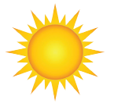
We all know that the sun gives us light. Does it give us heat? After standing under the sun light for some time, touch your head. Does it feel hot? Yes, it feels hot because the sun gives out heat besides light. Now, you can understand why it is difficult to walk bare-footed on sunny days in the afternoon.
Combustion (Burning)
Heat energy can be generated by the burning of fuels like wood, kerosene, coal, charcoal, gasoline/petrol, oil, etc., In your home, how do you get heat energy to cook food?
Friction
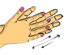
Rub your palms for some time and then hold them to your cheeks. How do you feel? We can generate heat by rubbing two surfaces of some substances. In the past people used to rub two stones together to light fire.
Electricity
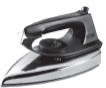
When electric current flows through a conductor, heat energy is produced. The water heater, iron box, electric kettle etc., work on this principle.
Molecules in objects are constantly vibrating or moving inside objects. We cannot see that movement with our naked eye. When we heat the object this vibration and movement of molecules increases and temperature of the object also increases.
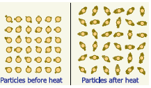
Thus, Heat is an energy that raises the temperature of a thing by causing the molecules in that thing to move faster.
Heat is not a matter. It doesn’t occupy space. It has no weight. Like light, sound and electricity, heat is a form of energy.
In short, Heat is the total kinetic energy of constituent particles of objects. SI Unit of Heat is joule. The unit calorie is also used.
In our day-to-day life, we come across a number of objects. Some of them are hot and some of them are cold. How do we decide which object is hotter than the other?
We use the tip of our finger to find out whether the tea in a cup has enough heat to drink or whether milk has been cooled enough to set for making curds. We often determine heat by touching the objects. But is our sense of touch reliable?
Activity 1: Take three bowls. Pour very cold water in the first bowl. (you can also add ice cube for cooling). Place luke warm water in the second. Half fill the third with hot water (not hot enough to burn) Set them in a row on the table, with the lukewarm water in the center. Place your right hand in the cold water, and your left hand in the hot water. Keep them in for a few minutes. Then take them out, shake off the water and put both into the middle bowl. How do they feel?
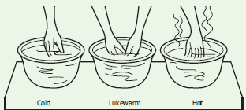
Priya says,“My right hand tells me that the water in the bowl is hot and the left hand tells me that the same water is cold.
Write down in your own words what do you experience? Discuss in the class why this happens.
Dash
Dash
When you placed your left hand in the hot tub, the heat from the bowl made the molecules on your hand vibrate faster. When you keep the same hot hand in the second bowl the vibrations transferred from your hand to make the particles in the water vibrate. Therefore, you feel loss of heat and hence your hand feels cold.
In the same way, your right hand which was placed in cold water, feels hot when you insert it into the lukewarm water. Because it takes heat energy from lukewarm water.
So, the same lukewarm water gives your hands different feeling according to the temperature of your hand. Measuring temperature by touching is not correct.
Thermometers are used to measure temperature accurately and quantitatively.
Definition of Temperature
The measurement of warmness or coldness of a substance is known as its Temperature.
SI unit of temperature is kelvin. Celsius and Fahrenheit are the other units used. Celsius is called as Centigrade as well.
It determines the direction of flow of heat when two bodies are placed in contact.
Activity 2: The Temperature of Boiling Water
Take water in a vessel and place the vessel on a stove. Fix the thermometer as shown in figure (Caution: The thermometer should not touch the vessel in which the water is being heated. Otherwise the thermometer will be broken at high temperature.)
All students have to read the temperature of the water and note the reading on the blackboard. Do you notice that the temperature is raising?
What is the temperature of water when it is boiling? Dash
Does the temperature of the boiling water rise further after that? Dash
When boiling water is heated for some time, the water continues to receive more heat, but it's temperature does not rise further. The point at which the water boils and temperature becomes stable is called the boiling point of water.
Guess and Write
(Check your assumption with the help of a thermometer)
Approximate temperature of the tea when you drink dash
Approximate temperature of cool lemon juice when you drink dash
Normally, the room temperature of water is approximately 30 degree Celsius OR (30 degree centigrade). When we heat water, its temperature raises and it boils at 100 degree Celsius. If we cool the water, it freezes at 0 degree Celsius.
(Note: you have to say 30 degree Celsius as 30 degree Celsius or 30 degree centigrade)
Is Neela correct?
Beaker A and B has water at 80 degree Celsius. 0 degree centigrade)
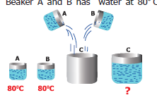
Then pour the water of A and B to an empty beaker C. Now, what is the temperature of the water in the beaker C? Neela says it will be 160 degree Celsius
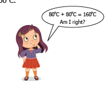
What is your opinion? Does Neela say correctly? Make a guess and verify it experimentally.
Dash
Dash
One day in 1922, the air temperature was measured at 59 degree Celcius in the shade in Libya, Africa. The coldest temperature in the world was measured in the Antarctic continent. It was approximately minus 89 degree Celcius. The minus sign (minus) is used when the temperature falls below the freezing point of water, which is 0 degree Celsius. If water becomes ice at 0 degree Celcius, you can imagine how cold minus 89 degree Celsius would be. Our normal body temperature is 37 degree Celcius. Our body feels cool if the air temperature is around 15 to 20 degree Celsius.
Can you estimate the night temperature in your village or city during winter?
Heat and temperature are not the same thing, they in fact mean two different things;
Activity 3: Take one litre water in a pan, and heat it on a stove. Calculate the time taken to start boiling. (that is, the time taken to thermometer reading goes up to 100 degree Celsius). Take five litre water in another pan and heat it on the same stove. Calculate the time taken by the water to start boiling.
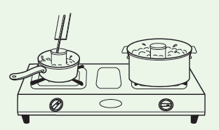
In which pan the water starts to boil earlier?
Both, however, show a temperature of 100 degree Celsius at the boiling point. Five litre water takes more time to boil i.e. more heat is needed to boil the larger amount of water. So, five litre boiling water has more heat energy than one litre water.
Place an open can of lukewarm water in each pan. Observe their temperature to find out which can gets hotter.
In which can water shows quick rise in temperature?
You can see that, five litre water pan will raise the can of water to a higher temperature. Though, both pans of boiling water have the temperature of 100 degree Celsius the five litre water can give off more heat energy than one litre water. Because it has more heat energy, and gives more energy to the water in the can.
Total heat is measured by calorie, the amount of heat needed to raise one gram of water by one degree centigrade.
Which has more heat energy in each pair? Put tick mark.
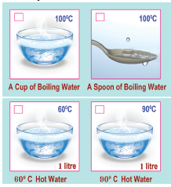
Let Us Think
Pavithra is having tea while watching the pond near her house. Surely, tea is in higher temperature than the water in the pond. Now, a question is arising in Pavithra’s mind. Which one has more heat energy, a cup of tea or the water in the pond? What do you think? Dash
Even though the temperature of the tea is higher than that of pond water, the volume of the water in pond is very high, hence the number of molecules in the water in the pond is higher than the tea in the cup. So, pond has more heat energy than tea cup.
An analogy between temperature and water level
Water ‘flows’ when there is a difference in the ‘levels’ of water in different places. It does not matter if there is more water in one place or another. Water from a puddle can flow into a reservoir or the other way around. The ‘temperature’ of an object is like the water level – it determines the direction in which ‘heat’ will flow. Heat energy flows from higher temperature to lower temperature.
Thermal contact and Thermal equilibrium
Two objects at different temperature are put together
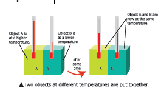
Consider two bodies A and B. Let the temperature of A be higher than that of B. On bringing bodies A and B in contact, heat will flow from hot body A to the cold body B. Heat will continue to flow till both the bodies attain the same temperature.
The temperature determines the direction of flow of heat.
1. You are holding a hot cup of coffee. Would the heat energy transfer from?
a. Your body to the coffee, or
b. The coffee to your body?
2. You are standing outside on a summer day. It is 40oC outside (note that normal body temperature is 37 Degree Celsius). Would the Heat energy transfer from?
a. Your body to the air particles, or
b. The air particles to your body?
3. You are standing outside on a winter day. It is 23oC outside. Would the heat energy transfer from?
a. Your body to the air particles, or
b. The air particles to your body?
Two objects are said to be in thermal contact if they can exchange heat energy. Thermal equilibrium exists when two objects in thermal contact no longer affect each other's temperature.
For example, if a pot of milk from the refrigerator is set on the kitchen table, the two objects are in thermal contact. After certain period, their temperatures are the same, and they are said to be in thermal equilibrium.
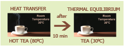
Sam is trying to open a tight jar, but he cannot open it. He asks his uncle to help. His uncle says that pour some hot water on the lid of the jar. Sam does so and tries to open it now. Wow! The jar is opened easily!
Do you have such experience? How do you open a tightly closed cap of the pen which could not be opened by you normally?
![The image shows solid ,liquid ,gas are made up of molecules The molecules in any object are in a state of vibration or movement.This cannot be seen with our naked eyes The upper part of the image shows that the molecules are closely and tightly packed in solid ,in liquid close together but not tightly packed,in gas The particles are far apart, with no regular arrangement, and move independently of each other. In the below image on heating the molecules in substances move faster when heating, spread apart and occupy more space. So, substances expand when heated.On cooling Substances also change their states from solid to liquid and liquid to gas.](images/image20.png)
Most substances expand when heated and contract when cooled. The change in length or area or volume (due to contraction or expansion) is directly related to temperature change.
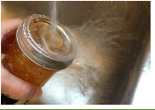
Activity 4:
Hammer a nail into a tin can. Ease the nail out. Put it in again to make sure that the hole is large enough for the nail. Then, holding the nail with a pair of pliers, scissors or forceps, heat the nail over a candle, in hot water, or over the stove. Try to put it into the hole in the can.
I see that dash, dash, you will see that, now it is hard to put the nail into the hole. Heat expands solids. The molecules in the solid move faster, spread apart and occupy more space.
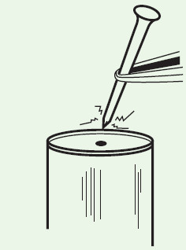
The expansion of a substance on heating is called, the thermal expansion of that substance.
A solid has a definite shape, so when a solid is heated, it expands in all directions i.e., in length, area and volume, all increase on heating.
The expansion in length is called linear expansion and the expansion in volume is called cubical expansion.
Why is the iron rim of a bullock cart wheel heated before it is fitted onto the wheel? Why is a small gap left between two lengths of railway lines?
We can perform an interesting experiment to find out an answer to these questions. All we need to do is to heat a cycle spoke.
Activity 5: Linear Expansion
Take a bulb, dry cell, candle, cycle spoke, coin (or broad - headed nail) and two wooden blocks.
Place one end of the cycle spoke on a wooden block and connect an electric wire to it. Put a stone over the spoke to hold it firmly in place on the wooden block,
as shown in Figure. The spoke should be parallel to the ground. Place the second wooden block under the free end of the spoke. Wrap some electric wire around the coin (or nail) and place it on the block. You may put a stone over the coin to hold it in place.
Connect a bulb and dry cell to the free ends of the wires connected to the coin and the spoke and make the circuit shown in the figure.
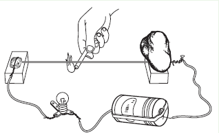
When the tip of the free end of the spoke touches the coin, the circuit is completed and the bulb lights up. Check to ensure this. If the bulb does not light up, it means the circuit is not complete, so check your connections properly. (Note: We will learn about electric circuit elaborately in electricity lesson.) Now slide a page of your book between the coin and spoke and then slide it out. That way you would get a gap between the coin and spoke equal to the thickness of the sheet of paper.
Does the bulb light up? If it does not, what could be the reason?
Dash, dash, you saw that the bulb does not light up when the spoke does not touch the
coin. Now light the candle and heat the spoke with it.
Did the bulb light up after the spoke was heated for some time? dash
If it did, then explain how the spoke touched the coin after it was heated. Dash, dash
Why does the bulb go off some time after the candle is taken away from the spoke? Dash, dash
What happens to the length of the spoke when it is heated or cooled? dash
Activity 6: Cubical Expansion
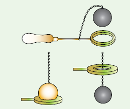
Heat the ball and check whether it passes through the ring.
Now let the ball cool down, and check whether it passes through the ring.
Solids expand due to heat and come back to the original state if heat is removed.
Fitting the iron rim on the wooden wheel
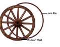
The diameter of the iron ring is slightly less than that of the wooden wheel. Therefore, it cannot be easily slipped on from the rim of wooden wheel.
The iron ring is, therefore, first heated to a higher temperature so that it expands in size and the hot ring is then easily slipped over to the rim of the wooden wheel. Cold water is now poured on the iron ring so that it contracts in size and holds the wooden wheel tightly.
Rivetting
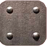
Rivets are used to join two steel plates together. Hot rivet is driven through the hole in the plates. One end of the rivet is hammered to form a new rivet head. When cooled, the rivet will contract and hold the two plates tightly together.
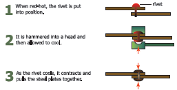
Give Reasons for the following
1. Gaps are left in between rails while laying a railway track. Dash
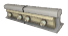
2. Gaps are left in between two joints of a concrete bridge. Dash
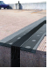
Cracking of a thick glass tumbler
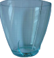
Glass is a poor conductor of heat. When hot liquid is poured into the tumbler, the inner surface of the tumbler becomes hot and expands while the outer surface remains at the room temperature and does not expand. Due to this unequal expansion, the tumbler cracks.
Electric wires
Electric wires between electric posts contract on cold days and sag in summers. To solve this problem, we leave wires slack so that they are free to change length.
Glassware used in kitchen and laboratory are generally made up of Borosilicate glass (pyrex glass). The reason is that the Borosilicate glass do not expand much on being heated and therefore they do not crack.
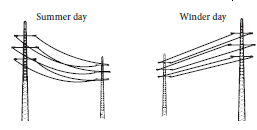
The photographs below show an expansion joint at the end of a bridge in winter and in summer. Which season is shown in each picture? Explain how do you know? Dash
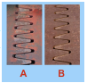
Point one I put a kettle containing 1 litre of cold water on the gas stove, and it takes 5 minutes reach the boiling point. My friend puts on a small electric kettle, containing half litre of cold water, and it takes 5 minutes to get up to boiling point. Which gives more heat in 5 minutes?
a. the gas supply or
b. the electricity supply?
Point two Can you say how many times as much? One calorie heat energy is needed to raise the temperature of the water from 30 degree Celsius to 31 How much heat energy is needed to raise the temperature of the water from 30 degree Celsius to 35 degree Celsius.
Heat
Through this activity you will be able to understand the ‘Thermal Energy Transfer'.
Step 1: Use the given URL in the browser. ‘THERMAL ENERGY TRANSFER activity page will open.
Step 2: Click the = icon on the top left of the activity window, a list will drop down, from the list select a title.
Step 3: A small flash video window will open, click the play icon to play the video and observe.
Step 4: From the list select any title under the 'Example" list, a small flash activity window will open, click anyone of the tab given under the window to know the process of thermal transfer. Repeat the activity with different titles from the menu.

THERMAL ENERGY TRANSFER URL:
http://d3tt741pwxqwm0.cloudfront.net/WGBH/conv16/conv16-int-thermalenergy/index.html#/intro

*Pictures are indicative only
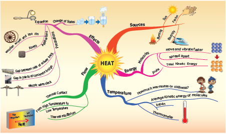
1. When an object is heated, the molecules that make up the object
a. begin to move faster
b. lose energy
c. become heavier
d. become lighter
2. The unit of heat is
a. newton
b. joule
c. volt
d. Celsius
3. One liter of water at 30-degree Celsius is mixed with one liter of water at 50 Degree Celsius. The temperature of the mixture will be
a. 80 Degree Celsius
b. More than 50 Degree Celsius but less than 80 Degree Celsius
c. 20 Degree Celsius
d. around 40 Degree Celsius
4. An iron ball at 50 Degree Celsius is dropped in a mug containing water at 50 degree Celsius. The heat will
a. flow from iron ball to water.
b. not flow from iron ball to water or from water to iron ball.
c. flow from water to iron ball.
d. increase the temperature of both.
1. Heat flows from a dash body to a dash body.
2. The hotness of the object is determined by its dash
3. The SI unit of temperature is dash
4. Solids dash on heating and dash on cooling.
5. Two bodies are said to be in the state of thermal dash if there is no transfer of heat taking place.
1. Heat is a kind of energy that flows from a hot body to a cold body.
2. Steam is formed when heat is released from water.
3. Thermal expansion is always a nuisance.
4. Borosilicate glass do not expand much on being heated.
5. The unit of heat and temperature are the same.
1. An ordinary glass bottle cracks when boiling water is poured into it, but a borosilicate glass bottle does not.
2. The electric wire which sag in summer become straight in winter.
3. Rivet is heated before fixing in hole to join two metal plates.
Roman letter five. Match the following
1. Heat – 0-degree Celsius
2. Temperature - 100-degree Celsius
3. Thermal Equilibrium - kelvin
4. Ice cube - No heat flow
5. Boiling water – joule
1. Heat: Joule: Temperature: dash
2. ice cube: 0 degree Celsius: Boiling water: dash
3. Total Kinetic Energy of molecules: Heat: Average Kinetic Energy: dash
1. Make a list of electrical equipments at home which we get heat from.
2. What is temperature?
3. What is thermal expansion?
4. What do you understand by thermal equilibrium?
1. What difference do you think heating the solid will make in their molecules?
2. Distinguish between heat and temperature.
1. Explain thermal expansion with suitable examples.
1. When a window is accidentally left open on a winter night, will you feel uncomfortable because the cold is getting in, or because the heat is escaping from the room?
2. Suppose your normal body temperature were lower than what it is. How would the sensation of hot and cold change?
3. If you heat a circular disk with a hole, what change do you expect in the diameter of the hole? Remember that the effect of heating increases the separation between any pair of particles.

We use electricity in our day to day life. Have we ever wondered from where do we get this electricity? How does this electricity work? Can we imagine a day without electricity? If you ask your grandfather, you can come to know a period without electricity. They used oil lamps for light, cooked on fires of wood or coal. By the advent of electricity, our day to day works are made easy and the world is on our hands. What are the appliances those work on electricity? What are the materials those allow electricity to flow through? What are electric circuits? What are electric cells and batteries? Come on, let us descend into this lesson to know more about electricity.
Activity 1
List out the electrical appliances used in your home. Dash
Selvan and Selvi are twins. They are studying in sixth standard. They visited their grandparent’s village during summer vacation. At 6 O'clock in the evening Selvan's Grandfather switched on the light. The whole house was illuminated. Seeing this Selvan asked his grandfather "How do we get light by switching on the switch?" So, his grandfather took him to the nearest electricity board and enquired about the electricity.
Let us look in to the conversation given below.
Selvan: Sir, how do the electric bulb lighten up when we switch on the switch?
Engineer: Due to electricity.
Selvan: Oh! From where do we get this electricity?
Engineer: We get electricity from thermal power, hydel power, tidal power, wind power, solar power etc., as sources of electricity.
Selvan: Sir! Are these plants exist everywhere?
Engineer: No, these plants are constructed depending upon the natural resources available at that particular place. For example, we have thermal power plant in Neyveli, Tamilnadu as lignite is available there.
Selvan: Yes, I have seen wind mills near the hills of Tirunelveli District which has potential wind resource. Thank you, sir, for your valuable information.
Grandfather: (while walking back to home) Do you think we get electricity only from the above-mentioned sources.
Selvan: (while entering into the home, noticing the clock on the wall) Grandpa! look at that wall clock, how does it work?
Grandfather: It needs electrical energy to work. Apart from the above mentioned sources, we electricity from cells, and batteries.

Selvan: Yes, Grandpa, now I am going to discuss about all these with Selvi.
What do you infer from the above dialogue? Any device from which electricity is produced is called the source of electricity. We get electricity from different sources.
The Major Electric power stations in
Tamilnadu are: Thermal stations (Neyveli in Cuddalore District, Ennore in Thiruvallur District), Hydel power stations (Mettur in Salem District, Papanasam in Tirunelveli District), Atomic power stations (Kalpakkam in Kanchipuram District, Koodankulam in Tirunelveli District), and Wind mills (Aralvaimozhi in Kanyakumari District Kayatharu in Tirunelveli District). Apart from these Solar panels which are prevalent in many places are used to produce electricity.
Let us discuss in shortly about working power stations.
1. Thermal Power stations
In thermal power stations, the thermal energy generated by burning coal, diesel or gas is used to produce steam. The steam thus produced is used to rotate the turbine. While the turbine rotates, the coil of wire kept between the electromagnet rotates. Due to electromagnetic induction electricity is produced. Here heat energy is converted into electrical energy.

2. Hydel power stations
In hydel power stations, the turbine is made to rotate by the flow of water from dams to produce electricity. Here kinetic energy is converted into electrical energy. Hydel stations have long economic lives and low operating cost.

3. Atomic power stations
In atomic power stations, nuclear energy is used to boil water. The steam thus produced is used to rotate the turbine. As a result, electricity is produced. Atomic power stations are also called as nuclear power stations. Here nuclear energy is converted into mechanical energy and then electrical energy.

The steam thus produced is used to rotate the turbine. As a result, electricity is produced. Atomic power stations are also called as nuclear power stations. Here nuclear energy is converted into mechanical energy and then electrical energy.
4. Wind mills
In wind mills, wind energy is used to rotate the turbine to produce electricity. Here kinetic energy is converted into electrical energy.


A device that converts chemical energy into electrical energy is called a cell.
A chemical solution which produces positive and negative ions is used as electrolyte. Two different metal plates are inserted into electrolyte as electrodes to form a cell. Due to chemical reactions, one electrode gets positive charge and the other gets negative charge producing a continuous flow of electric current.
Depending on the continuity of flow of electric current cells are classified in to two types. They are primary cells and secondary cells.
Primary Cells
They cannot be recharged. So, they can be used only once. Hence, the primary cells are usually produced in small sizes.
Examples
cells used in clocks, watches and toys etc., are primary cells.

Secondary Cells
A cell that can be recharged many times is called secondary cell. These cells can be recharged by passing electric current. So, they can be used again and again. The size of the secondary cells can
be small or even large depending upon the usage. While the secondary cells used in mobiles are in the size of a hand, the cells used in automobiles like cars and buses are large and very heavy.

Examples
Secondary Cells are used in Mobile phones, laptops, emergency lamps and vehicle batteries.
Activity 2
From the following pictures, identify those use primary cell and secondary cell. Mark Primary cell as 'P' Secondary cell as 'S'.

Dash

dash

dash

dash

Dash
Battery
Often, we call cells as batteries. However only when two or more cells are combined together they make a battery. A cell is a single unit that converts chemical energy into electrical energy, and a battery is a collection of cells.

Activity 3
Take a dry cell used in a flashlight or clock. Read the label and note the following
1. Where is the plus and 'minus symbol?
2. What is the output voltage?
Look at the cells that you come across and note down the symbols and voltage.
Warning
All experiments with electricity should only be performed with batteries used in a torch or radio. Do not, under any circumstance, make the mistake of performing these experiments with the electricity supply in your home, farm or school. Playing with the household electric supply will be extremely dangerous.
Grandfather asked Selvi to bring torchlight. While taking the torchlight, it fell down and the cells came out. She puts the cells back and switched it on (Figure A)

The torchlight did not glow. She thought the torchlight was worn out. She was afraid that grandfather might scold her. She started crying. Her uncle came there and asked the reason for crying. She conveyed the matter. Her uncle removed the cells and reversed them (Figure B)

Now, the torch glows. Selvi’s face also glows. Uncle told her the reason and explained her about electric circuits.
Inside view of torch

An electric circuit is the continuous or unbroken closed path along which electric current flows from the positive terminal to the negative terminal of the battery. A circuit generally has.
a) A cell are battery- a source of electric current
b) Connecting wires- for carrying current
c) A bulb- a device that consumes the electricity
d) A key or a switch- this may be connected anywhere along the circuit to stop or allow the flow of current.
a. Open Circuit
In a circuit if the key is in open (off) condition, then electricity will not flow and the circuit is called an open circuit. The bulb will not glow in this circuit.

b. Closed Circuit

In a circuit if the key is in closed (on) condition, then electricity will flow and the circuit is called a closed circuit. The bulb will glow in this circuit.
Can you make a simple switch own by simple things available to you?
Types of Circuits
1. Simple Circuit
2. Series Circuit
3. Parallel Circuits

1. Simple Circuit
A circuit consisting of a cell, key, bulb and connecting wires is called a simple circuit.

2. Series Circuit
If two or more bulbs are connected in series in a circuit, then that type of circuit is called series circuit. If any one of the bulbs is damaged or disconnected, the entire circuit will not work.

3. Parallel Circuit
If two or more bulbs are connected in parallel in a circuit, then that type of circuit is called parallel circuit.
If any one of the bulbs is damaged or disconnected the other part of the circuit will work. So parallel circuits are used in homes.
![The image shows a circuit diagram with two bulbs, a battery, and two switches. The battery is in the center of the diagram, with the positive terminal connected to the top of the circuit and the negative terminal connected to the bottom. The two bulbs are connected in parallel, with one bulb connected to the top of the circuit and the other bulb connected to the bottom. The two switches are also connected in parallel, with one switch connected to the top of the circuit and the other switch connected to the bottom](images/image61.png)
Symbols of Electric Components
In the circuits discussed above, we used the figures of electric components. Using electric components in complicated circuits is difficult. So, symbols of the components are used instead of figures. If these symbols used in electric circuits, even complicated circuits can be easily understood.
Serial number 1 |
Electric component. Electric cell |
Figure. |
|
Remarks. Longer terminal refers positive and shorter terminal refers negative. |
Serial number 2 |
Electric component. Battery |
Figure. |
|
Remarks. Two or more cells connected in series |
Serial number 3 |
Electric component. Switch-open |
Figure. |
|
Remarks. Switch is in off position |
Serial number 4 |
Electric component. Switch-closed |
Figure. |
|
Remarks. Switch is in on position |
Serial number 5 |
Electric component. Electric bulb |
Figure. |
|
Remarks. The bulb does not glow |
|
|
Figure. |
|
Remarks. The bulb glows |
Serial number 6 |
Electric component. Connecting wires |
Figure. |
|
Remarks. Used to connect devices. |

1. Electric Eel is a kind of fish which is able to produce electric current. This fish can produce an electric shock to safeguard itself from enemies and also to catch its food.

itself from enemies and also to catch its food.
More to Know
Ammeter is an instrument used in electric circuits to find the quantity of current flowing through the circuit. This is to be connected in series.

Will electric current pass throw all materials?
If an electric wire is cut, we could see a metal wire surrounded by another material. Do you know why it is so?

Conductors
The rate of flow of electric charges in a circuit is called electric current. The materials which allow electric charges to pass through them are called conductors. Examples: Copper, iron, aluminum, impure water, earth etc.

Insulators (Non-Conductors)
The materials which do not allow electric charges to pass through them are called insulators or nonconductors.
Examples: plastic, glass, wood, rubber, china clay, ebonite etc.,

Activity 4
Connect the objects given in the table between A and B and write whether the bulb glows or not.

Serial number 1 |
Objects Pin |
Materials of the objects DASH |
Glow or not glow |
Serial number 2 |
Objects Match stick |
Materials of the objects DASH |
Glow or not glow |
Serial number 3 |
Objects Safety pin |
Materials of the objects DASH |
Glow or not glow |
Serial number 4 |
Objects Pencil |
Materials of the objects DASH |
Glow or not glow |
Serial number 5 |
Objects Metal spoon |
Materials of the objects DASH |
Glow or not glow |
Serial number 6 |
Objects Rubber |
Materials of the objects DASH |
Glow or not glow |
Serial number 7 |
Objects Pen |
Materials of the objects DASH |
Glow or not glow |
Serial number 8 |
Objects Wooden scale |
Materials of the objects DASH |
Glow or not glow |
Serial number 9 |
Objects Hairpin |
Materials of the objects DASH |
Glow or not glow |
Serial number 10 |
Objects Glass piece |
Materials of the objects DASH |
Glow or not glow |
Safety measures to safeguard a person from electric shock
1. Switch off the power supply.
2. Remove the connection from the switch.
3. Push him away using non conducing materials.
4. Give him first aid and take him to the nearest health centre.


More to Know
Thomas Alva Edison (February 11, 1847 – October 18, 1931) was an American inventor. He invented more than 1000 useful inventions and most of them are electrical appliances used in homes. He is remembered for the invention of electric bulb.


Activity 5
Produce electricity using copper plates, zinc plate, connecting wires, key, beaker and porridge (rice water) [the older the porridge the better will be the current] Arrange copper and zinc plates in series as shown in the figure. Half fill two beakers with porridge. Connect the copper plate with the positive of and LED bulb and zinc to the negative. Observe what happens.
Now you can replace porridge with curd, potato, lemon etc.


Scientist for the People

Electricity
Through this activity you will be able to form a simple circuit.
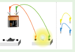
Step 1: Use the given URL in the browser. Simple Circuit will open.
Step 2: In right side of the activity window there are diagrams of some wires and in the left side diagrams of a battery, switch and a bulb are given.
Step 3: By using the mouse drag and drop the wires to the battery and switch to make connections. Click on the switch, if the circuit is formed correctly the bulb will glow.
Step 4: Use the second URL to try Series and parallel circuits.
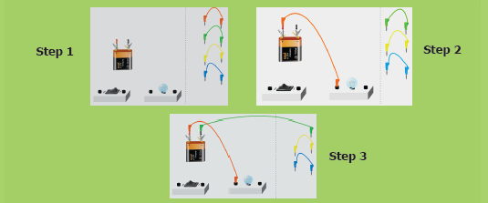
Simple Circuit’s URL:
Series and parallel circuits url
http://www.physics-chemistry-interactive-flash-animation.com/ electricity_electromagnetism_interactive/components_circuits_association-series_parallel.htm
*Pictures are indicative only
1. The device which converts chemical energy into electrical energy is
a. fan
b. solar cell
c. cell
d. television
2. Electricity is produced in
a. transformer
b. power station
c. electric wire
d. television
3. Choose the symbol for battery
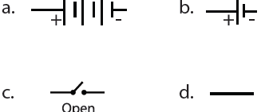
4. In which among the following circuits does the bulb glow?
a.
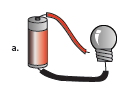
b.
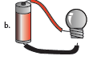
c.
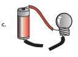
d.
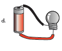
5. Dash is a good conductor
a. silver
b. wood
c. rubber
d. plastic
1. Dash are the materials which allow electric current to pass through them.
2. Flow of electricity through a closed circuit is Dash
3. Dash is the device used to close or open an electric circuit.
4. The long perpendicular line in the electrical symbol represents its Dash terminal.
5. The combination of two or more cells is called a Dash
1. In a parallel circuit, the electricity has more than one path.
2. To make a battery of two cells, the negative terminal of one cell is connected to the negative terminal of the other cell.
3. The switch is used to close or open an electric circuit.
4. Pure water is a good conductor of electricity.
5. Secondary cell can be used only once.
Serial number 1 |
Symbol |
Description open key |
Serial number 2 |
Symbol 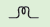 |
Description cell |
Serial number 3 |
Symbol |
Description bulb glows |
Serial number 4 |
Symbol |
Description battery |
Serial number 5 |
Symbol |
Description bulb does not glow |
A CELL
A DEVICE
ELECTRICAL ENERGY
IS CALLED
IN TO
CHEMICAL ENERGY
THAT CONVERTS
1. In the given circuit diagram, which of the given switch(s) should be closed. So that only the bulb A glows.
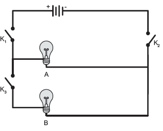
2. Assertion (A) It is very easy for our body to receive electric shock.
Reason (R) Human body is a good conductor of electricity.
a. Both A and R are correct and R is the correct explanation for A.
b. A is correct, but R is not the correct explanation for A.
c. A is wrong but R is correct.
d. Both A and R are correct and R is not the correct explanation for A.
3. Can you produce electricity from lemon?
4. Identify the conductor from the following figures.
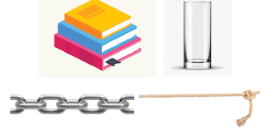
5. What type of circuit is there in a torch light?
6. Circle the odd one out. Give reason for your choice.
Switch, Bulb, Battery, Generator.
1. Draw the circuit diagram for series connection.
2. Can the cell used in the clock gives us an electric shock? Justify your answer.
3. Silver is a good conductor but it is not preferred for making electric wires. Why?
1. What is the source of electricity? Explain the various power stations in India?
2. Tabulate the different components of an electric circuit and their respective symbols.
3. Write short notes on conductors and insulators.
1. Rahul wants to make an electric circuit. He has a bulb, two wires, a safety pin and a piece of copper. He does not have any electric cell or battery. Suddenly he gets some idea. He uses a lemon instead of a battery and makes a circuit. Will the bulb glow?
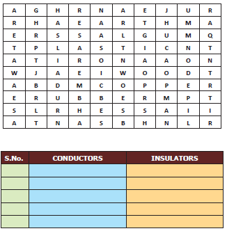
slow or fast, reversible or irreversible
physical and chemical changes
desirable or undesirable, natural or human made


Observe the pictures in the previous page and fill in the gaps.
Initial stage Seed |
Changing stage Sapling |
Initial stage dash |
Changing stage Night |
Initial stage Rock |
Changing stage dash |
Initial stage raw fruit |
Changing stage dash |
What is common in all the above pairs?
dash
What is a change? dash
The process in which something becomes different from what it was earlier? It is the observable difference between initial state and the final state of any substance.
Change is the law of nature. In our day - to - day life we see many changes around us. Weather changes periodically (daily or seasonally), season change periodically. A paper burns readily while it takes a few days for an iron nail to rust. It takes a few hours for milk to turn into curd but vegetables get softened in a few minutes when cooked.
The what happens during a change? The above said changes are accompanied by change in the properties like shape, colour, temperature, position and composition. Some changes can be observed while some are not possible to notice.
Can you list some of the changes that you have observed in your daily life?
Activity 1: What happens when you blow air into a balloon?

Is there any change in size? Yes OR No
Is there any change in shape? Yes OR No
Is there any other change? Dash

There are different types of changes that occur around us. Some changes take place very quickly while others take hours, days or even years. Some changes are temporary while some are permanent. Some changes produce new substances while others do not. Some changes are natural while others are made by human beings. Some changes are desirable to us but some changes are not desirable.
We shall now try to classify changes on the basis of certain similarities and differences.
Activity 2: Look at the pictures and discuss about the duration for the changes to take place.


Slow changes
Changes which take place over a long period of time (hours or days or months or years) are known as slow changes.
Examples: growth of nail and hair, change of seasons, germination of seed.
Fast Changes
Changes which take place within a short period of time (seconds or minutes) are known as fast changes.
Examples: Bursting of balloon, breaking of glass, bursting of fire crackers, burning of paper.
Reversible change
Changes which can be reversed (to get back the original state) are known as reversible changes.
Examples: Touch me not plant (Responding to touch), stretching of rubber band, melting of ice.
Touch me not plant

Activity 3: Try to make a boat and an aeroplane one by one using the same piece of paper. This means the change of shape discussed here is reversible.

Irreversible change
Changes which cannot be reversed or to get back the original state are known as irreversible changes.
Activity 4: What kind of changes are they?

a) Burning of a candle. Dash
b) Piercing a balloon with a pin. Dash
Examples: Change of milk into curd, digestion of food, making idly from batter.

Physical changes
Activity 5: Take an apple and cut it into two halves. Cut one half into
pieces and share it with your friends.
Is there any change in the composition of the apple while cutting?
No, only the shape and size have changed. This can be called a physical change.
Leave the other half on the table for some time. You can see brown patches formed on the cut surface because of the reaction between some substances in the apple and the air around it. This is a chemical change.

Physical changes are the temporary changes in which there is change in the physical appearance or physical state of the substance but not in its chemical composition. Here no new substance is formed.
Example: Melting of ice, the solution of salt or sugar, stretching of rubber band.
Let us now understand the physical changes that take place in water. You already know that water exists in three states as solid, liquid and gas. Change of state takes place either by heating or cooling. By heating energy is supplied and by cooling energy is taken away. These are the reasons for the changes.

Let us name a few processes connected with the changes in states of water.
Change ice into water on heating |
Process melting |
Change water into steam on heating |
Process vapourisation |
Change steam into water on cooling
|
Process condensation |
Change water into ice on cooling
|
Process freezing |
More to Know
The change of state from solid to gas directly is called sublimation.
Example: Camphor
Let us understand one more physical change
Dissolution
The spreading of the solid particles (broken into individual molecules) among the liquid molecules is called as dissolution.

1. Water is known as the universal solvent. It dissolves a wide range of substance.
Activity 6: Take half a cup of water, add one spoon full of sugar and stir well.

a. What do you observe? Dash
b. What happened to the sugar? Dash
c. Where is it gone? Dash
d. The solute in the above solution is Dash
e. The solvent in the above solution is Dash
f. Have you seen a glass of water and a glass of sugar solution looking alike? Dash
Chemical changes
Chemical changes are the permanent changes in which there is a change in the chemical composition and new substance is formed.
Examples: Burning of wood, popping of popcorn, blackening of silver ornaments, and Rusting of iron.
Physical Change No new substance formed in this change. |
Chemical Change New substance formed in this change. |
Physical Change No change in the chemical composition. |
Chemical Change There a is change in the chemical composition. |
Physical Change It is a temporary change. |
Chemical Change It is a permanent change. |
Physical Change It is reversible. |
Chemical Change It is irreversible. |
Activity 7: Look at the pictures and write whether they are physical or chemical changes.

dash

Dash

Dash

Dash
Desirable changes
Activity 8: Look at the pictures and write whether they are desirable or undesirable changes.

Dash

Dash

Dash

Dash
The changes which are useful, not harmful to our environment and desired by us are known as desirable changes.
Examples: Ripening of fruit, growth of plants, cooking of food, milk changing to curd.
Undesirable changes
The changes which are harmful to our environment and not desired by us are
known as undesirable changes.
Examples: Deforestation, decaying of fruit, rusting of iron.
Activity 9: Identify the type of changes
Natural or Human made

Dash

Dash

Dash

Dash

Natural changes
Changes which take place in nature on their own and are beyond the control of human beings are known as Natural changes.
Examples: Rotation of the earth, Changing phases of the Moon, Rain.
Human made or artificial changes the changes which are brought about by human beings are known as human made or artificial changes. They will not happen on their own.
Examples: Cooking, Deforestation, Cultivating crops, construction of buildings.
Changes Around Us
Through this activity you will be able to understand reversible & irreversible changes.

Step 1: Use the given URL in the browser. ‘Reversible and irreversible change’s page will open. Use the arrow marks on both sides of the substance to choose another substance to test.
Step 2: Click and drag the substance into the beaker, observe whether it dissolves or not. Click the Dissolving OR Reversing button to switch between the both activities.
Step 3: In the Reversing activity, with some substances you can choose either to cool or to Heat them. With other substances you can choose either to Heat or to filter them by clicking the respective buttons.
Step 4: Click on the Reset button to clear.


Reversible and irreversible change’s URL:
http://www.bbc.co.uk/schools/scienceclips/ages/10_11/rev_irrev_changes_fs.shtml
*Pictures are indicative only
1. When ice melts to form water, change occurs in its
a. position
b. colour
c. physical state
d. composition
2. Drying of wet clothes in air is an example of
a. Chemical change
b. Undesirable change
c. irreversible change
d. physical change
3. Formation of curd from milk is
a. a reversible change
b. a fast change
c. an irreversible change
d. an undesirable change
4. Out of the following an example of a desirable change is
a. rusting b. change of seasons
c. earthquake d. flooding
5. Air pollution leading to acid rain is a
a. reversible change
b. fast change
c. natural change
d. human made change
1. Magnet attracts iron needle. This is dash change. (a reversible or an irreversible)
2. Boiling of egg results in dash change. (a reversible or an irreversible)
3. Changes that are harmful to us are dash (desirable or undesirable)
4. Plants convert carbon-di-oxide and water into starch. This is an example of dash change. (natural or human made)
5. Bursting of fire crackers is a dash change whereas germination of seeds is a dash change. (slow or fast)
1. Growing of teeth in an infant is slow change.
2. Burning of match stick is a reversible change.
3. Change of new moon to full moon is human made.
4. Digestion of food is a physical change.
5. In a solution of salt in water, water is the solute
1. Curdling of milk: irreversible change: Formation of clouds: dash change
2. Photosynthesis: Dash change: burning of coal: Human – made change
3. Dissolution of glucose: reversible change: Digestion of food: Dash change
4. Cooking of food: desirable change: decaying of food: DASH change
5. Burning of matchstick: DASH change: Rotation of the Earth: Slow change
1. Growth of a child, Blinking of eye, Rusting, Germination of a seed
2. Glowing of a bulb, lighting of a Candle, breaking of a coffee mug, curdling of milk
3. Rotting of an egg, condensation of water vapour, trimming of hair, Ripening of fruit
4. Inflating a balloon, popping a balloon, fading of wall paint, burning of kerosene
1. What kind of a change is associated with decaying of a plants?
2. You are given some candle wax. Can you make a candle doll from it? What kind of change is this?
3. Define a slow change.
4. What happens when cane sugar is strongly heated? Mention any two changes in it.
5. What is a solution?
1. What happen when paper is burnt? Explain.
2. Can deforestation be considered a desirable change? Explain.
3. What type of changes is associated with germination of a seed? Explain
1. Give one example for each case that happens around you.
a. Slow and fast change
b. Reversible and irreversible change
c. Physical and chemical change
d. Natural and man-made change
e. Desirable and undesirable change
1. When a candle is lit the following changes are observed.
a. Wax melts.
b. Candle keeps burning.
c. The size of the candle decreases.
d. The molten wax solidifies
e. Which of the changes can be reversed? Justify your answer.

Air is present everywhere around us. We cannot see air. But we can feel its presence in so many ways. For example, we feel air when the trees rustle, clothes hanging on a clothes-line sway, pages of an open book flutters when the fan is switched on, when kites fly in the sky. We cannot see, touch or taste air but we can feel it. It is the air that makes all these movements possible. Thus, we can understand that air is present all around us.
Air is necessary for us to live. We can live without food for some days, without water for a few hours, but cannot survive without air for more than a few minutes. So, air is very important for all living beings to survive. When air is moving it is called wind. It is cool and soothing as breeze.
When air moves with force, it is called storm. It can even uproot trees and blow off the roof tops. Air is necessary for breathing and also for combustion. Shall we do an activity?
Activity 1: Air is everywhere Let us take an empty glass bottle. Is it really empty or does it have something inside?

Now, shall we turn the glass bottle upside down? Can you agree that there is still something inside the empty glass bottle? Let us do the following activity to find what is there inside an empty glass bottle. Dip the open mouth of the bottle into the trough filled with water as shown in
Figure 1. Observe the bottle. Does water enter the bottle? DASH
Now tilt the bottle slightly. Now again dip the open mouth of the bottle as shown in Figure 2. Do you think that water will enter the bottle? DASH
Kindly observe the Figure 2 carefully. You can see bubbles coming out of the bottle.
When you perform the experiment, can you hear the bubbly sound? can you now guess what was inside the bottle? DASH
Yes, you are right.
It is “air” that was present in the bottle. The bottle was not empty at all. In fact, it was filled completely with air even when you turned it upside down. That is why we notice that water does not enter the bottle when it is pushed in an inverted position, as there was no space for air to escape.
When the bottle was tilted, the air was able to come out in the form of bubbles, and water filled up the empty space that the air has occupied.
Hence, we can see that air fills all the space inside the bottle.
Air


Atmosphere and its layers
Exosphere low temperature
Ionosphere
Mesosphere – Burning of meteors
Stratosphere – Ozone layer
Troposphere – Whether changes
Air for survival plants and Animals
Light energy
Carbon di ox side
Chlorophyll
Oxygen
Water
Composition
Dust 1 percentage - Carbon di ox side, Water vapour - Photosynthesis
Respiration and combustion
Oxygen 21 percentage - Respiration and combustion
Nitrogen 78 percentage – Fertilizers and protein synthesis
Uses of air
Breathing

Burning

Cycle tube

Patient

Mountaineer

Our earth is surrounded by a huge envelope of air called the atmosphere. Atmosphere extends to more than 800km above the surface of earth and is held in place by the earth’s gravity. The atmosphere protects us from many harmful rays coming from the sun. The air envelope is thicker near the earth’s surface and as we go higher the density and the availability of air gradually decreases. This is because, as we go higher, the force of gravity decreases, so it is not able to hold large amount of air.
The atmosphere is made of five different layers – the troposphere, the stratosphere, the mesosphere, the ionosphere and the exosphere.

The troposphere is the layer closest to the earth. It is the layer in which we live. It extends upwards for about 16km above the surface of the earth. Movement of wind takes place in this layer. It also contains water vapour, which is responsible for making clouds. This layer is responsible for the weather we experience on earth.
Aircrafts usually fly above this layer to avoid strong winds and bad weather. The stratosphere lies above the troposphere. This layer has the ozone layer in it. The ozone layer protects all life on earth from the harmful ultraviolet rays of the sun.
A weathercock shows the direction in which the air is moving at a particular place. You can also make a wind sock to find the direction of the wind. Can you try it yourself?

Is air a thing or a composite mixture?


For long time, that is, until eighteenth century, human thought ‘air’ as a fundamental constituent of matter. However, an ingenious experiment conducted by Joseph Priestley in 1774 showed that "air is not an elementary substance, but a composition," or mixture of gases. He was also able to identify a colourless and highly reactive gas which was later named ‘oxygen’ by the great French chemist Antoine Lavoisier.
Priestley took a tub of water and made a float and placed a candle on it. He covered the candle with a glass jar. [As the bottom portion of the jar was filled with water, no air can enter or exit and hence the jar was completely sealed (Figure 1). As you would have guessed the candle flame was extinguished in a very short time. He used a magnifying glass to focus the sun rays to light the candle. Thus, he tried to relight the candle many times without opening the sealed jar (Figure 2). The candle could not be relit. What can we make out of it?
It was clear that something in the air was being used for burning and being converted into another substance. Once the substance in the air that was aiding the burning was completely used by the burning flame and converted into another substance, the flame went out.
[Later chemist named the substance necessary for burning as oxygen and during the process of burning oxygen is converted mostly into carbon dioxide]
Now as the jar was inside the water, Priestley could gently lift the jar and place a live mouse inside it without allowing outside air to enter the jar (Figure 3). Without oxygen, as you would have guessed, the mouse died (Figure 4). It was clear that oxygen was necessary for the survival of the mouse.
In the next step, he gently lifted the jar and placed a mint plant (Figure 5). (Note: Look at the Figure- 5; you could see that the plant is inserted into the bell jar when the jar is very much inside the water. This is done to ensure that the outside air is not entering into the bell jar.) Plant being a living thing like mouse, perhaps he thought, would die. Instead, the plant survived. After placing the mint plant, he lit up the candle and it continued to burn (Figure 6).
In fourth experiment, he took a jar, burned a candle and converted all oxygen into carbon dioxide. He placed a mint plant and a mouse into this jar. Both the plant and the mouse survived (Figure 7). He found that plants and animals have a synergy. Animals consume oxygen and release carbon-di-oxide and plants take up carbon dioxide and release oxygen.
During 1730 to 1799, Jan Ingenhousz showed that sunlight is essential to plants to carry out photosynthesis and also to purify air that is fouled by breathing animals or by burning candles. From these experiments it was clear that “air” is a composite mixture of many gases like oxygen and carbon di- oxide.
Proof for release of oxygen in photosynthesis
Activity 2: Take a healthy branch of Hydrilla and place it in a funnel. Invert the funnel in a beaker of water as shown in the figure. Invert a test tube over the stem of the funnel. The stem of the funnel should be kept immersed inside the water.
Leave the beaker in sunlight for some time. You will notice some bubbles rising in the test tube. The bubbles contain oxygen released by the plant during photosynthesis. If we show a glowing splinter to the collected air, it burns brightly. This shows that the collected gas is oxygen.

Test for the proportion of oxygen and nitrogen in air
Activity 3: We know that iron undergoes rusting with oxygen and forms iron oxide. This process can be used to estimate the percentage of oxygen in air, which has been removed by the rusting reaction. Take a small portion of iron wool, press it into a 20 ml graduated test tube and wet it with water. Tip away excess of water.
Take a 500 milli beaker and fill half of the beaker with water. Invert the test tube and place it in air. Leave the arrangement at least for a week without making any disturbance to the test tube. Observe the changes that had happened in the iron wool and to the level of water inside the test tube. We could see that the water level has increased inside the test tube. The rise in water is because of oxygen in air which has been removed by the rusting reaction. This will be about 20% which is approximately the percentage of oxygen in the air.

More to Know!
Daniel Rutherford, a Scottish chemist, discovered nitrogen. He removed oxygen and converted it into carbon-di-oxide using an inverted bell jar using a burning candle. He passed this air without oxygen through lime water and removed carbon-di-oxide also.
Once the carbon-di-oxide was removed in that air, neither a candle burned nor a plant breathed. Hence, he was sure that the remaining air that he had, did not have oxygen and carbon-di-oxide. He was able to produce a gas, which showed the same property of the air without oxygen and carbon-di-oxide. Hence this gas was named ‘nitrogen’.
Test for Carbon-di-oxide in air
Pour some lime water in a glass tumbler. Bubble some air using a straw through the limewater. After a few minutes, look at the lime water carefully. The lime water will produce a white precipitate and that the lime water will eventually turn to a milky white solution. This shows the presence of carbon-di-oxide in air.
From Priestley's experiment which was followed by Ingenhousz and Rutherford, we came to know that air was not just one substance. We will now describe what air is made up of. This is called composition of air.
The major component of air is nitrogen. Almost four – fifth of air is nitrogen. The second major component of air is oxygen. About one fifth of air is oxygen. In addition to nitrogen and oxygen gases, air also contains small amount of carbon – di – oxide, water vapour and some other gases like argon, helium etc. The air may also contain some dust particles.

The composition of air in terms of percentage of its various components can be written as follows

The composition of air changes slightly from place to place and also from season to season. For example,
Test for the presence of dust particles in air You might have seen the sunlight entering into a dark room through a narrow slit and making shiny dust particles dancing merrily on the path of sunlight. Actually, the air in a room always contains some dust particles, but they are so small that normally they are not visible to us. When a beam of sunlight falls on them, the tiny dust particles become visible.
Shall we do an activity to calculate the amount of dust particles in air from our area?
Take a graph sheet. Using marker pens draw a 5x5 cm square on the graph. Apply a thin film of grease on the graph sheet. This sheet will serve as dust collector. Make four or five graph sheets.
Discuss in the whole class, as where to place the dust collectors, how long to collect dust particles and place the dust collectors in agreed positions.
Ensure that the dust collectors do not get blown away. After the time scheduled for performing this activity is reached, remove the paper and count the number of collected dust particles in the marked area in all the sheets, using a magnifying glass at the dust collector. We can see something similar to the diagram below

Then, calculate the mean number of dust particles in the marked area.
Mean equal to total number of dust particles on collector divided by number of squares on collector
The range of the dust can also be calculated as given below
Range equal to Maximum value minus minimum value
Collect details from all the areas where we have kept the dust collector sheets. Tabulate the recordings in the table given below
Location of dust collector |
Mean number of dust particles per small square |
Range |
|
|
|
|
|
|
|
|
|
|
|
|
Which area do you think will have the most dust? dash
Which area do you think will have the least dust? Dash
Test for water vapour in air

Take a few ice cubes in a glass. Keep it on the table for a few minutes. Observe what happens. You could see tiny droplets of water all over the outer surface of the glass. From where do these droplets come? The water vapour present in the air condenses on the cold surface of the glass. This shows that air contains water vapour.
When we burn a candle, paper, kerosene, coal, wood or cooking gas (LPG), oxygen is needed. The oxygen needed for the burning of candle, paper, kerosene, coal, wood and cooking gas comes from the air around us. Thus, for burning a substance continuously so as to make fire, a continuous supply of fresh air is needed. If we cut off the supply of fresh air to a burning substance, then the burning substance will not get oxygen necessary for burning to continue and hence the substance will stop burning. In rockets, as they go high in the atmosphere, the availability of oxygen is considerably reduced. Therefore, in rockets along with the fuel, oxygen is also carried for combustion.
The process of burning of a substance in the presence of oxygen and releasing a large amount of light and heat is called burning. If the process does not emit flame then it is called combustion.
Activity 4:

Oxygen is necessary for burning Place two candles on a table. Ensure that both the candles are of same size and height. Mark them as candle 1 and candle 2 using a chalkpiece. Light both the candles. Now, cover candle 2 with glass tumbler as shown in the figure Observe the happenings at both the candles.
What does happen to candle 1? dash
What does happen to candle 2? Dash
Can you guess why did the covered candle extinguish? dash
Let us summarize the happenings.
The candle 1 continues to burn, unless it is blown – off by strong moving air or any other external force. This is because fresh air is continuously available to the candle for its burning process. Candle 2 glows for a while and then gets put – off. When the burning candle is covered with a glass tumbler, the candle can use the oxygen available in the air inside the glass tumbler. Since only a small amount of air is present inside the glass tumbler – only a small portion of oxygen is available for the candle to continue glowing. When all the oxygen of the air inside the gas jar is used up, then the burning candle gets extinguished.
Now, repeat the candle glowing experiment taking four containers of different sizes. For example, you can take a 250 milli conical flask, a 500 milli bottle, a one-liter jar, a two-liter jar. Cover the burning candle one by one with these containers and find out how long it takes for the candle to extinguish in each case. Record your observations in the following table.
Serial number |
Volume of the Container in (milli liter) |
Time taken for candle to extinguish in (second) |
|
|
|
|
|
|
|
|
|
|
|
|
Can you write interpretation based on your observations at the table?
dash
Respiration in plants
Plants require energy for their growth and hence respiration also occurs in plants. During respiration, plants take in oxygen and release carbon–di–oxide, just as animals do. Gaseous exchange with air in atmosphere takes place in plants with the help of tiny holes called stomata present on their leaves.
Photosynthesis
Plants manufacture food by a process called photosynthesis. During photosynthesis, carbon-di-oxide from the air and water from the soil react in the presence of sunlight to produce food. Most plants possess a green pigment called chlorophyll and it is also used-up in the process of photosynthesis. The word equation given below explains the process of photosynthesis.

Plants release oxygen during photosynthesis which is much more than the oxygen consumed by the plants, during respiration.
Respiration in Animals
When we breathe in air, the oxygen present in the air reacts chemically with digested food within the body to produce carbon-di-oxide gas, water vapour and energy.

Light energy – Chlorophyll absorb light from the sun
Carbon di ox side - Carbon di ox side enters through the stomata, a natural opening in the leaf
Water – water is absorbed through the root and carried through the stem to the rest of the plant
water, carbon di ox side and the sun light combine in the leaf to make food
Oxygen – Oxygen and water vapour exit the leaf through the stomata water loss from leaves is called transpiration.
This energy is required to carry out many processes in the body such as movement, growth and repair. This process by which oxygen reacts with digested food to form carbon-di-oxide, water vapour and energy is called respiration. The process can be represented by a word equation as given below

Carbon-di-oxide formed during respiration dissolves in the blood and is exhaled out of the body through the lungs. The inhaled and exhaled air thus contain the same substances but in different proportion, except nitrogen which is present in the same amount. Inhaled air contains more oxygen while the exhaled air contains more carbon-di-oxide.
Let us have a look at the following table to compare the composition of air in inhaled and exhaled air.
Component Nitrogen |
Inhaled air 78% |
Exhaled air 78% |
Component Oxygen |
Inhaled air 21% |
Exhaled air 16% |
Component Carbon- di - oxide |
Inhaled air 0.03% |
Exhaled air 4% |
Component Water vapour |
Inhaled air Variable amount |
Exhaled air Amount increases in exhaled air |
Component Noble gases |
Inhaled air 0.95% |
Exhaled air 0.95% |
Component Dust |
Inhaled air Variable amount |
Exhaled air none |
Component Temperature |
Inhaled air Room temperature |
Exhaled air Body temperature |
Respiration of plants and animals in water
The water in ponds, lakes, rivers and seas have some amount of dissolved air containing oxygen in it. The plants and animals that live in water use the oxygen dissolved in water for breathing. For example, frogs respire through their skin, fish respire using their gills.
When carbon-di-oxide is cooled to -57 degree Celsius, it directly becomes a solid, without changing to its liquid state. It is called dry ice and is a good refrigerating agent. Dry ice is used in trucks or freight cars for refrigerating perishable items such as meat and fish while transporting them.

a. a patient having breathing difficulties,

b. a mountaineer climbing a high mountain,

c. a diver going deep into the sea oxygen gas cylinders are used for breathing purposes.

Blowing air is used to turn the blades of wind mills.

The wind mills are used to draw water by running pumps, run flour mills and to generate electricity.
In animals
Air
Through this activity you will be able to understand the atomic level of the process that plants use to convert solar energy into chemical energy.
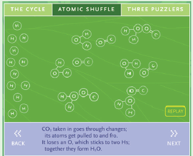
Step 1: Use the given URL in the browser. ‘Illuminating Photosynthesis page will open.
Step 2: Three buttons given on the top of the activity window to explore. Click the 'The Cycle' button, in this window you can open the curtain and water the plant by click on the curtain and the watering pot.
Step 3: Explore the atomic level process of the photosynthesis by clicking the 'Atomic Shuffle' button.
Step 4: Click 'Replay" to view the process again and 'Next' to view the next level of the process.
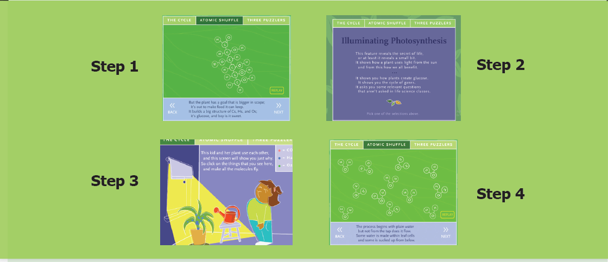
Illuminating Photosynthesis URL:
http://www.bbc.co.uk/schools/scienceclips/ages/10_11/rev_irrev_ changes_fs.shtml
*Pictures are indicative only

1. Dash is the percentage of nitrogen in air.
a. 78%
b. 21%
c. 0.03%
d. 1%
2. Gas exchange takes place in plants using dash.
a. Stomata
b. Chlorophyll
c. Leaves
d. Flowers
3. The constituent of air that supports combustion is dash.
a. Nitrogen
b. carbon-di-oxide
c. Oxygen
d. water vapour
4. Nitrogen is used in the food packaging industry because it dash
a. provides colour to the food
b. provides oxygen to the food
c. adds proteins and minerals to the
food
d. keeps the food fresh
5. dash and dash are the two gases, which when taken together, make up about 99 percentage of air.
one. Nitrogen
two. carbon-di-oxide
three. Noble gases
four. Oxygen
a. one and two
b. one and three
c. two and four
d. one and four
1. Dash is the active component of air.
2. The gas given out during photosynthesis is dash.
3. Dash gas is given to the patients having breathing problems.
4. Dash can be seen moving in a beam of sunlight in a dark room.
5. Dash gas turns lime water milky.
1. Inhaled air contains a large amount of carbon-dioxide.
2. Planting trees help in decreasing global warming.
3. The composition of air is always exactly the same.
4. Whales come up to the water surface to breathe in oxygen.
5. The balance of oxygen in atmosphere is maintained through photosynthesis in animals and respiration in plants.
1. Moving Air - Photosynthesis
2. Layer in which we live - Troposphere
3. Stratosphere - Wind
4. Oxygen - Ozone layer
5. carbon-di-oxide – Combustion
1. Plants manufacture food by a process called photosynthesis.
2. Plants require energy for their growth.
3. Plants take in oxygen and release carbon-di-oxide just as animals.
4. Plants take carbon-dioxide from the atmosphere, use chlorophyll in the presence of sunlight and prepare food.
5. Such oxygen is available to animals and human beings for breathing.
6. During this process, oxygen is released by plants.
1. Photosynthesis is dash
Respiration is Oxygen
2. 78% of air is Does not support combustion
Dash is Supports combustion
1. What will happen if we remove plants from the aquarium?
2. What will happen if we remove the fish from the aquarium and keep it (with green plants) in a dark place?

1. What is atmosphere? Name the five layers of atmosphere.
2. How do the roots of land plants get oxygen for breathing?
3. What should be done if the clothes of a person catch fire accidentally? Why?
4. What will happen if you breathe through mouth?
1. Biscuits kept open on a plate during monsoon days lose its’ crispness. Why?
2. Why do traffic assistants wear a mask on duty?
1. How do plants and animals maintain the balance of oxygen and carbon-dioxide in air?
2. Why is atmosphere essential for life on earth?
1. Can you guess why fire extinguishers throw a stream of carbon-di-oxide while putting - off fire?


An explanation of the above flow chart begins
Types of Cell
There are two types of cells
1. Prokaryotic cells
2. Eukaryotic cells
The Prokaryotic cells does not have true nucleus
Examples of Prokaryotic cells
Bacteria and Cyanobacteria
Eukaryotic cell has a true nucleus
Examples of plant cell and animal cell
An explanation of the above flow chart ended here.


Observe the two pictures given above. Do you observe any similarity between them?
Close your eyes and imagine a brick wall. What is the basic building block of the wall? A single brick, of course.
Like a brick wall, your body is composed of basic building blocks, and are named as “Cells”.
The cell is the basic structural and functional unit of every living organism.
The cell is self - sufficient to carry out all the fundamental and essential functions of an organism.
All living things are made of one or more cells. There are variety of cell types however, they all have some common characteristic features.

More to Know
Can you see a cell with your naked eye? Cells are very minute and said to be microscopic and cannot be seen with our naked eyes.
They can be observed only through a specialized scientific instrument called “microscope”.
Now a days an electron microscope is used to magnify and observe the cells.


The Englishman Robert Hooke was a scientist, mathematician, and inventor. He improved microscope which was used in those days, and built a compound microscope. He placed water-lens beside the microscope to focus the light from an oil-lamp on specimens to illuminate them brightly. So that he was able to see the minute parts of the objects clearly.


One day Hooke made thin sections of the cork and observed them through his microscope. He observed many small identical chambers which were hexagonal in shape. He was surprised.
After that he observed many objects like Butterfly's wings, Bee’s compound eyes etc.,
Based on this observation, Hooke published a book named Micrographia in the year 1665, where he first used the term Cell. He described the structure of tissue using the term cell.
In Latin the word 'cellua' means a small chamber.
The branch of science that deals with the study of cells is called ‘Cell Biology’.
A typical cell consists of three major parts:
1. An outer cell membrane.
2. A liquid cytoplasm.
3. A nucleus.
Analogous to the body's internal organ, like eyes, heart, lungs, etc., organelles are specialized structures and perform valuable functions necessary for normal cellular operation. Many distinct structures called Organelles lie within the cell.
The size of cells may vary from a micrometer (a million of a meter) to a few centimeters. Most cells are microscopic and cannot be seen with the naked eye. They can be observed only through the Microscope.
Smallest size of the cell is present in Bacteria. The size of the bacterial cell ranges from 0.01 micrometer to 0.5 micro meter.
Activity 1
Aim: To observe the structure of a single cell (Hen’s egg).
Materials Needed: A Hen’s egg and a plate.
Method: Crack the shell and break open the egg in a plate.
Observation: The egg has a yellow part and a transparent part surrounding it. The white transparent part (albumin) is jelly-like and represents the cell’s cytoplasm, while the yellow part (yolk) is thicker and represents the cell’s nucleus. On the internal side of the shell can be seen a thin membranelike structure, which represents the cell membrane.

On the other hand, the largest cell is the egg of an ostrich with 170-millimeter width. We can see this with the naked eye.
In Human body the nerve cells are believed to be the longest cells.
Cell size has no relation to the size of an organism. It is not necessary that the cells of, say an Elephant be much larger than those of a Mouse.
Cells are of different shapes. For example, some shapes are given in the below pictures.

The number of cells present in different organisms may vary. Organisms may be either unicellular (single cell) or multicellular. Organisms such as Bacteria, Amoeba, Chlamydomonas, and Yeast are unicellular.
On the other hand, organisms such as Spirogyra, Mango, and Human beings are multicellular. (that is) made up of a few hundreds to millions of cells.
Approximate number of cells in the Human body is 3.7 Multiply 1013 or 37,000,000,000,000.
Ranges of cell size
(From small to Large)


Generally, cells are classified into two types. First one is Prokaryotic cell. It has no true nucleus and no nuclear membrane. Another one is Eukaryotic cell. It has true nucleus consisting of nuclear membrane.
The unicellular organisms like Bacteria has Prokaryotic cells. It has no true nucleus.
This type of nucleus is called as nucleoid. No nuclear membrane is around this nucleoid. These cells were the first form of life on Earth. It is ranging from 0.003 to 2.0 micro meter in diameter.
Example. Escherichia coli bacteria.

Cell which has true nucleus is called as eukaryotic cell. It is bigger than prokaryotic cell. Its organelles are bounded by membrane.
Example. Plants, animals, most of the fungi and algae.

Activity 2
Aim: To observe onion peel cells under a microscope
Materials Required: Glass slide, cover slip, onion, iodine solution, knife
and microscope.
Procedure: Take an onion and cut it into two halves along its length. Take out one of its fleshy leaves. With the help of a pair of forceps, remove a transparent, thin peel from the inner surface of the leaf. Take a glass slide and put a drop of water at the centre. Place the peel on the drop of water. Pour a drop of iodine solution on the peel. Now place a cover slip over the material. Observe under the microscope.
Observation: You will be able to see rectangular cells of the onion peel, with a nucleus in each of them.

Differences between Prokaryotic cell and Eukaryotic cell
Prokaryotic cell It’s diameter ranges from 1 to 2 micron |
Eukaryotic cell It’s diameter ranges from 10 t0 100 micron |
Prokaryotic cell Absence of membrane bound organelles |
Eukaryotic cell Presence of membrane bound organelles |
Prokaryotic cell Nucleus is not surrounded by nuclear membrane |
Eukaryotic cell True nucleus is surrounded by nuclear membrane |
Prokaryotic cell Absence of nucleoli |
Eukaryotic cell Presence of nucleoli |
Both plant and animals are made up of cells. Both cells are eukaryotic in nature, having a well-defined membrane – bound nucleus.
Plant cell

Animal cell
cell.

3 Dimension - cell structure
1. How does a cell look like?
2. What is its shape and size?


We can see the three sides of the cell structure. You can also view the size, shape and location on the organelles of the cell.
3-D view is appealing because it is more like reality. In 3-D, view we can see the entire view of the cell. It exposes the accurate size and shape and shows the correct location of the cell organelles.
Activity 3
Aim
To rectify the variation between 2-D shape and 3-D shape.
Materials required
Polythene bag, water, marble ball (golli gundu)
Procedure
Take a polythene bag with water. Put a marble ball into the polythene bag. Then draw a picture in your note book about this task.
If you draw a picture in round shape. It will be called 2-Dimensional picture. If you draw a picture in spherical shape it is called 3-Dimensional.
Result
Now you can realize your misconception. So, the animal cells are spherical in shape and structure, not in a round shape.
Serial number 1 |
Cell Components Cell wall |
Main Functions
|
Special Name Supporter and protector |
Serial number 2 |
Cell Components Cell membrane |
Main Functions
|
Special Name Gate of the cell
|
Serial number 3 |
Cell Components Cytoplasm |
Main Functions A watery, gel-like material in which cell parts move |
Special Name Area of movement |
Serial number 4 |
Cell Components Mitochondria |
Main Functions Produce and supply most of the energy for the cell |
Special Name Power house of the cell |
Serial number 5 |
Cell Components Chloroplasts |
Main Functions
|
Special Name Food producers for the cell (Plant cell) |
Serial number 6 |
Cell Components Vacuoles |
Main Functions Store food, water, and chemicals |
Special Name Storage tanks |
Serial number 7 |
Cell Components Nucleus |
Main Functions
|
Special Name Control centre |
Serial number 8 |
Cell Components Nucleus membrane |
Main Functions Surrounds and protects the nucleus control the movement of materials in and out of the nucleus |
Special Name Gate of the nucleus |
The Cell
Through this activity you will be able to understand the differences between Plant and Animal Cell, their organelles and their functions.

Step 1: Use the given URL in the browser. ‘What do Cells do? Page will open. Click the Start Button to begin the activity.
Step 2: Click continue to proceed to the activity, a column with cell organelles is given. Your task is to build a plant cell and animal cell. Roll the mouse over each organelle to learn about it.
Step 3: Use the mouse to drag the appropriate organelles to build the cell.
Step 4: After finishing the animal cell, continue the same process to finish the plant cell.


What do Cells do? URL:
http://sepuplhs.org/high/sgi/teachers/cell_sim.html
*Pictures are indicative only
1 The unit of measurement used for expressing dimension (size) of cell is dash
a. centimeter
b. millimeter
c. micrometer
d. meter
2. Under the microscope Priya observes a cell that has a cell wall and distinct nucleus. The cell that she observed is
a. a plant cell
b. an animal cell
c. a nerve cell
d. a bacteria cell
3. The ‘control centre’ of the eukaryotic cell is
a. Cell wall
b. Nucleus
c. Vacuoles
d. Chloroplast
4. Which one of the following is not an unicellular organism?
a. Yeast
b. Amoeba
c. Spirogyra
d. Bacteria
5. Most organelles in an eukaryotic cell is found in the
a. Cell wall
b. cytoplasm
c. nucleus
d. Vacuole
1. The instrument used to observe the cell is dash
2. I take part in food production of a cell. Who am I? dash
3. I am like a policeman. Who am I. dash
4. The Term “cell” was coined by dash
5. The egg of an Ostrich is the dash single cell.
1. A cell is the smallest unit of life.
2. Nerve cell is the longest cell
3. Prokaryotes were the first form of life on earth.
4. The organelles of both plants and animals are made up of cells.
5. New cells are produced from the existing cells.
1. Control center - Cell membrane
2. Food producer (Plant cell) - Mitochondria
3. Gate of the nucleus - Nucleus
4. Gate of the cell - Chloroplasts
5. Energy producer – Nuclear membrane
1. Elephant, Cow, Bacteria, Mango, Rose plant.
2. Hen's Egg, Ostrich's egg, Insect's egg.
1. Prokaryote is Bacteria
Eukaryote is dash
2. Spirogyra is Plant cell
Amoeba is dash
3. Food producer is Chloroplasts
Power house is dash
1. Who discovered the cell in 1665?
2. What type of cells do we have?
3. What are the essential components of a cell?
4. What are the organelles found only in plant cell?
5. Give any three examples of eukaryotic cell?
6. Which one is called as “Area of movement”?
7. Shiva said “Bigger onion has larger cells when compared to the cells of smaller onion”! Do you agree with his statement or not? Explain Why?
1. Why cells are called building blocks of life?
2. Identify any four parts of the Plant cell.
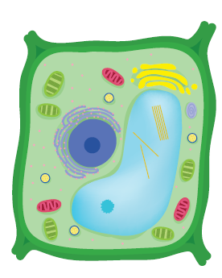
3. Distinguish between prokaryotic and eukaryotic cells
4. Make sketches of animal and plant cells which you observe under microscope.
5. Write about the contribution of Robert Hooke in cell biology.
1. Tabulate any five cell organelles and their function.
2. Draw a neat labelled diagram of a prokaryotic cell.
1. Use your imagination and create 3-D model of a plant cell?
2. You can use numerous food materials such as jelly and some cake to make a cell body. Cell organelles can be made using nuts and dry fruits. You can display the model in your class room and invite teachers or students from other classes. If they rise questions on the project try to give answer.
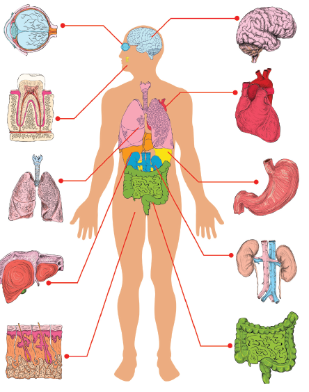
Organ systems are formed by the association of organs which are organized from tissues. This kind of organization helps the organism to perform various activities more efficiently. A group of organs that work together to perform a particular function is known as an organ system. The Human body has eight major organ systems. They are
In this lesson, let us study more about the structure and function of these organ systems of our body.
The skeletal system consists of bones, cartilages and joints. Bones provide a frame work for the body. Bones along with muscles help in movements such as walking, running, chewing and dancing etc.,
The adult human skeletal system consists of 206 bones and few cartilages, ligaments and tendons. Ligaments help in connecting bone to bone. Tendons connect bone to muscle. The two major divisions of the skeletal system are Axial skeleton and Appendicular skeleton.
Axial skeleton forms the upright axis of the body which includes
Appendicular skeleton consists of the bones of the limbs along with their pectoral and pelvic girdles.
Activity 1
Sit absolutely still. Observe the movements taking place in your body. You must be blinking your eyes time to time. Observe the movements in your body as you breathe. Write down the movements in your note book.
We are able to move a few parts of our body easily in various directions and some, only in one direction. Why we are not able to move some parts at all directions?
Skull
The skull is made up of cranial bones and facial bones. It protects the brain and the structures of the face. The hyoid bone present at the base of the buccal cavity and the auditory ossicles (Malleus, Incus and Stapes) are also included in the skull. Lower jaw bone is the largest and strongest bone in the human face.
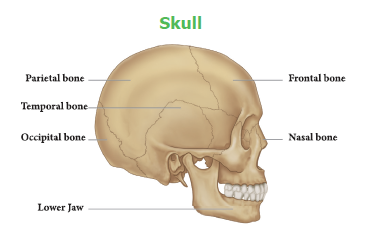
Vertebral Column
Vertebral column extends from the base of the skull. It protects the spinal cord. It is formed by a number of serially arranged small bones called vertebrae (singular. vertebra)
Rib cage
The rib cage is made up of 12 pairs of curved, flat rib bones. It protects the delicate vital organs such as heart and lungs.
Limbs
Man has two pairs of limbs namely upper limbs (fore limbs) and lower limbs (hind limbs). Fore limbs are used for holding, writing etc., while hind limbs are used for walking, sitting etc.,
Girdles
The fore limbs and hind limbs are attached to the axial skeleton with the help of pectoral and pelvic girdle respectively.
Skeletal System
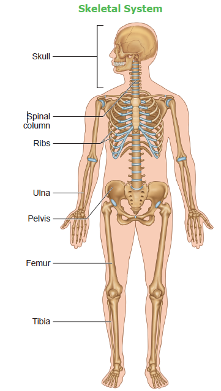
Activity 2
To show that we can bend or move our body only at those points where the bones meet.
Materials required
A wooden scale and string.
Method
Ask your friend to tie a wooden scale and your arm together. So that the elbow is at the centre. Even if you try hard, you cannot bend your elbow.
Conclusion
A single bone cannot bend. The different bones joined together at the elbow, help the elbow to bend.
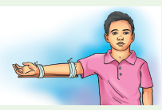
1. The smallest bone in our body is present inside the ear. It is called Stapes. It is only 2.8 millimeters long (average length). The longest bone in the body is the thigh bone. (Femur)
2. A new born baby has more than 300 bones. As the baby grow, some bones are joined together, hence the skeleton of an adult has 206 bones.
In the body, muscular system along with the skeletal and nervous system, is responsible for the body movements. Muscles can contract and therefore, help in moving other parts of the body. It maintains the posture and body position. There are three types of muscles namely
Activity 3
Move your lower arm up and down gently. Feel the contraction and relaxation of your biceps and triceps muscles. The muscles present in the upper arm help in the contraction of front biceps muscles (become short and thick), and also relaxation of rear triceps muscles (become long and thin). You can feel the muscles on top that go stiff. When the arm is moved downwards, the front muscles relax and the rear muscles contract.
How do muscles work?
Muscles of the body can only pull and they cannot push. Two muscles are required to move a bone at a joint. When one muscle contracts, the other muscle relaxes.
For example, to move ‘the lower arm up and down two type of muscles called biceps and triceps are required. When we raise our lower hand, the biceps in front become short by contraction and the triceps at the back stretch to pull up the arm. When we lower our arm, the triceps at the back contract and biceps stretch to pull the arm down.
Skeletal Muscles
Skeletal muscles of our body are attached to the bones. They are called Voluntary muscles because they can be controlled by our will. Example: Muscles of arm.
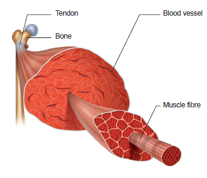
Smooth muscles
Smooth muscles are found in the walls of the digestive tract, urinary bladder, arteries and other internal organs. They are called ‘Involuntary muscles’ because they are not controlled by our will.
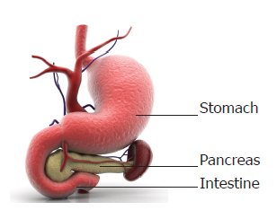
Cardiac muscles
The walls of the heart is made up of cardiac muscles. They are capable of rhythmic, contraction continuously and involuntary in nature.
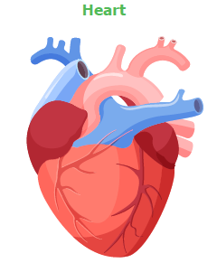
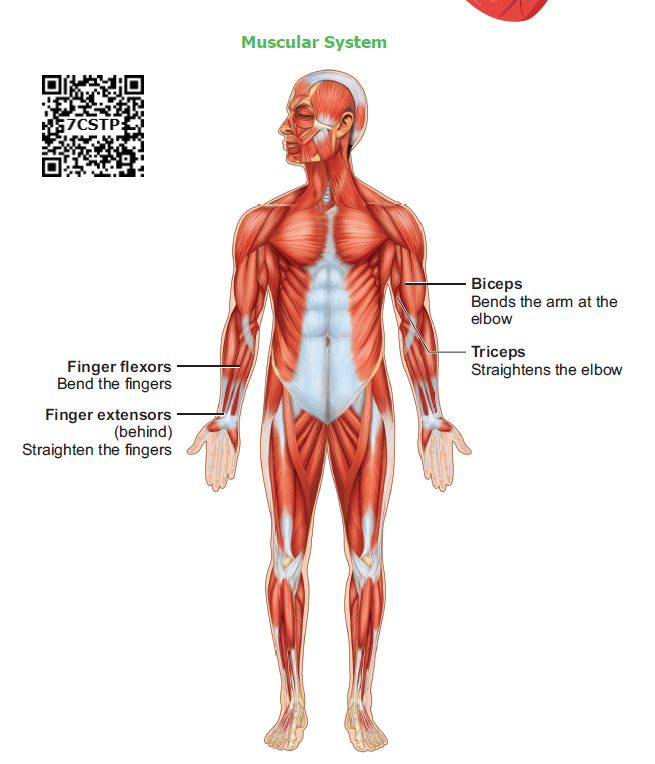
Digestive system consists of the alimentary canal and associated glands. This system is involved in the conversion of complex food substances into simple forms and absorption of digested food.
The digestive glands associated with the alimentary canal are salivary glands, liver, and pancreas. They secrete enzymes which help in the process of digestion of food in the digestive tract or alimentary canal.
The alimentary canal is about 9 meters long. Stomach is a major organ for digestion of food materials. Absorption of digested food occurs in the small intestine.
Parts of Alimentary canal
1. Mouth
2. Buccal cavity
3. Pharynx
4. Oesophagus or Food pipe
5. Stomach
6. Small Intestine
7. Large Intestine
7. Anus
Associated glands for digestion
1. Salivary glands
2. Gastric glands
3. Liver
4. Pancreas
5. Intestinal glands
Digestive System
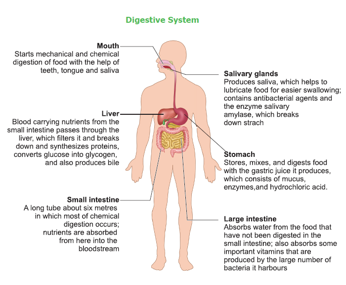
Mouth
Starts mechanical and chemical digestion of food with the help of teeth, tongue and saliva
Liver
Blood carrying nutrients from the small intestine passes through the liver, which filters it and breaks down and synthesizes proteins, converts glucose into glycogen, and also produces bile
Small intestine
A long tube about six meters in which most of chemical digestion occurs nutrients are absorbed from here into the bloodstream
Salivary glands
Produces saliva, which helps to lubricate food for easier swallowing, contains antibacterial agents and the enzyme salivary amylase, which breaks down starch
Stomach
Stores, mixes, and digests food with the gastric juice it produces, which consists of mucus, enzymes, and hydrochloric acid
Large intestine
Absorbs water from the food that have not been digested in the small intestine, also absorbs some important vitamins that are produced by the large number of bacteria it harbours
Respiratory system is involved in exchange of respiratory gases and there by helps us to breathe. The human respiratory system consists of nostrils, nasal cavity, pharynx, larynx, trachea, bronchi and lungs. It helps in the movement of air in and out of the body. Exchange of oxygen and corban di oxide occurs between air in the lung and blood. The entry of food into the wind pipe is prevented by a flap like structure called Epiglottis.
Lungs
Lungs are the main respiratory organ. They are located within the chest cavity. The trachea, commonly called windpipe, is a tube supported by cartilaginous rings that connects the pharynx and larynx to the lungs, allowing the passage of air. The trachea divides into right and left bronchi and enter into the lungs. They divide further and ends in small air sacs called alveoli. The lungs are covered by a double layered pleura. Diffusion of gases (oxygen and corban di oxide) occurs across the alveolar membrane.
Respiratory System
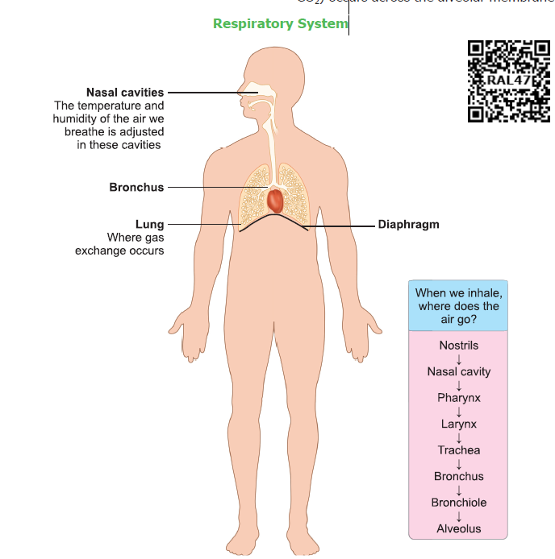
Nasal cavities
The temperature and humidity of the air we breath is adjusted in these cavities
Lung - Where gas exchange occurs
Bronchus - carry air to and from your lungs
Diaphragm - that helps you inhale and exhale (breathe in and out)
When we inhale, where does the air go
Nostrils, Nasal cavity, pharynx, Larynx, Trachea, Bronchus, Bronchiole, Alveolus
Exchange of gases by the respiratory system involves three different processes such as
1. External Respiration: Intake of oxygen from the air and releasing of carbon di oxide from the lungs occurs through nostrils.
2. Internal Respiration: Taking in of oxygen and giving out carbon di oxide. The circulatory system transports oxygen and carbon dioxide to and from all parts of the body. Hemoglobin in the red blood cells (RBC) transport oxygen and carbon dioxide.
3. Cellular Respiration: Cells take in oxygen and release carbon dioxide
Activity 5
Aim
To prove that exhaled air is rich in carbon- di- oxide
Materials required
Two glass jars with lime water and a straw
Procedure
Leave the first jar with lime water undisturbed, blow air in to the second jar with the help of a straw
Observation
Lime water turns milky in few seconds in the second jar. The carbon- di- oxide gas alone can change the lime water into milky white.
Conclusion
Carbon-di-oxide is present in the air that we exhale.
Each lung has about 300 million air sacs or alveoli. Yawning helps us to take in more amount of Oxygen and to give out carbon di oxide.
The circulatory system is one of the important system consisting of heart, blood vessels and blood. It transports respiratory gases, nutrients, hormones and waste materials within the body. It protects the body from harmful pathogens and also regulates the body temperature.
Heart
Heart is located in the thoracic cavity between the two lungs. The heart is four chambered and is surrounded by a double layered membrane called pericardium. The heart pumps blood continuously throughout our life time.
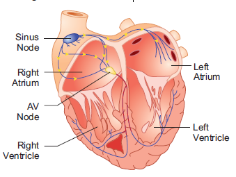
Blood vessels
Three types of blood vessels are present in the body. They are arteries, veins and capillaries. They form a closed network through which the blood is circulated.
Blood
Blood is a fluid connective tissue of red colour containing plasma and blood cells. There are three types of blood cells namely, Red blood corpuscles (RBC), White Blood corpuscles (WBC) and Blood Platelets. RBCs are produced in the bone marrow.
Circulatory System
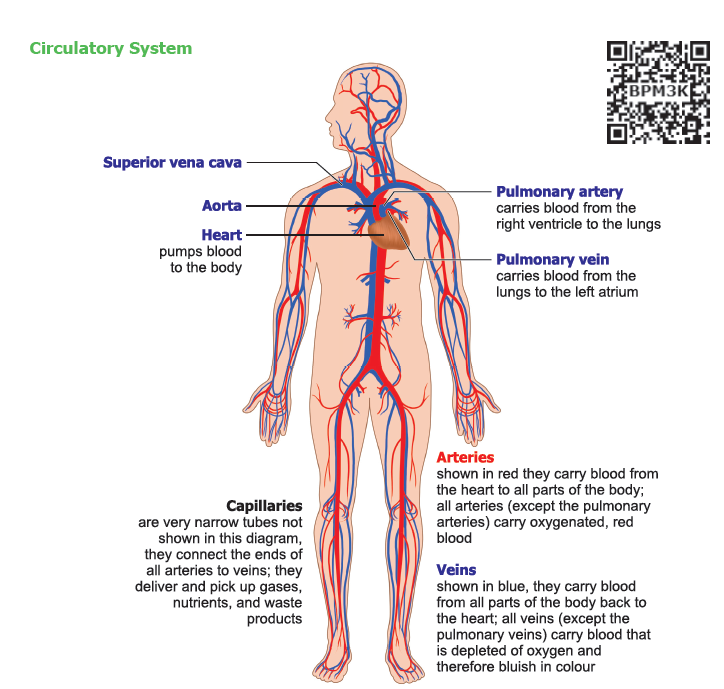
Superior vena cava
Aorta - delivers nutrients and hormones
Heart - pumps blood to the body
Capillaries - are very narrow tubes not shown in this diagram, they connect the ends of all arteries to veins; they deliver and pick up gases, nutrients, and waste products
Pulmonary artery - carries blood from the right ventricle to the lungs
Pulmonary vein - carries blood from the lungs to the left atrium
Arteries - shown in red they carry blood from the heart to all parts of the body; all arteries (except the pulmonary arteries) carry oxygenated, red blood
Veins
shown in blue, they carry blood from all parts of the body back to the heart; all veins (except the pulmonary veins) carry blood that is depleted of oxygen and therefore bluish in colour
Activity 6
Place the middle and index fingers of your right hand on the inner side of your left wrist. Can you feel a throbbing movement? Why do you feel the throbbing? This throbbing is called the pulse and it is due to the blood flowing in the arteries. Count the number of pulses in one minute.
How many pulse beats could you count in one minute? The number of beats per minute is called the Pulse rate. A resting person usually has a pulse rate between 72 to 80 beats per minute.
Find other places in your body where you can feel the pulse. Record your own pulse beats and your classmates as beats per minute; Compare the values.
Donate Blood
Hospitals have blood banks where blood can be temporarily stored before it is given to the patients in need. Every healthy person over 18 years of age can donate blood. So that, it can be given to persons in need during emergencies of accidents or operations. Blood donation saves their life.
Nervous system is well developed in human and is composed of neurons or nerve cells. This system includes brain, spinal cord, sensory organs and nerves. The two important functions of the nervous system along with the endocrine system are conduction and coordination.
Nervous System
Brain
Is the part of the central nervous system that regulates and controls activities throughout the body, the site of consciousness and memory?
Spinal cord Is a bundle of nerves extending from the brain stem through the backbone; conducts signals to and from the brain
Intercostal nerves, Radial nerve, Femoral nerve
Peripheral nerves Are the network of nerves and ganglion that carry signals to and from the central nervous system
Brain
The brain is a complex organ which is placed inside the cranium. It is protected by a three-layered tissue covering called meninges. Brain has three regions namely fore brain, mid brain and hind brain. It is the controlling centre of the body.
Spinal cord
It is the extension of medulla oblongata of the hind brain and is enclosed within the vertebral column. Spinal cord connects the brain to different part of the body through nerves.
The Functions of the Nervous System
1. Sensory Input
The conduction of signals from sensory receptors.
2. Integration
The interpretation of the sensory signals and the formulation of responses.
3. Motor output
The conduction of signals from the brain and spinal cord to effectors, such as muscle and gland cells.
Brain is said to store as many as 100 million bits of information in a life time.
Sense organs are like the windows to the outside world. There are five sense organs in our body such as eyes, ears, nose, tongue and skin. They make us aware of our surroundings. We are able to see, hear, smell, taste and feel, only through sense organs.
Eyes
Eyes help us to see things around us i.e., their colour, shape, size whether they are near or far, moving or at rest. The eyelids and eyelashes keep the eyes safe. The eye has three main parts namely cornea, iris and pupil.
Ears
Ears help to hear and differentiate sounds around us. The ears also help us in maintaining the balance of the body when we are walking, running or climbing. The ear has three major parts, the outer ear, the middle ear and the inner ear. The outer ear in human beings is made up of an external flap called pinna.
Skin
Skin is the largest sense organ as it covers the whole body. The skin helps to feel the things around us by touching, that is whether they are hot or cold, smooth or rough, dry or wet, hard or soft. Skin covers the body and protects it from germs. It also keeps the body moist and regulates the body temperature.
Functions of the skin
1. Skin forms an effective barrier against infection by microbes and pathogens.
2. Skin helps us to synthesize vitamin D using sunlight.
Take Care of Your Sense organs
Endocrine system regulates various functions of the body and maintains the internal environment. Endocrine glands are present in the body, produce chemical substances called hormones.
Endocrine System
Gland Pituitary gland |
Location At the base of brain |
Gland Pineal Gland |
Location At the base of brain |
Gland Thyroid Gland |
Location Neck |
Gland Thymus Gland |
Location Chest |
Gland Pancreas (Islets of Langerhans |
Location Abdomen |
Gland Adrenal Gland |
Location Above the kidney |
Gland Gonads |
Location Pelvic cavity |
6 point 9. Excretory system
The nitrogenous wastes are removed from the body excretory system. It is composed of kidneys, ureters, urinary, bladder, and urethra
Kidneys
These are bean shaped structures present in the abdominal cavity. The functional units of the kidney are called Nephrons which filter the blood and form the urine.
Why do we drink water? Our body contains about 70% water. Some parts have more water like the grey matter of the brain (about 85%) and some less, like fat cell (about 15%). We normally consume 1.5 to 3.5 liters of water every day in the form of food and water.
Excretory System
Renal artery
Brings blood containing oxygen and urea from the aorta to the kidneys
Renal vein
Brings filtered blood from the kidneys to the inferior vena cava
Ureter
Carries urine from the kidneys to the urinary bladder
Kidneys
(Just inside the back ribs) regulate the chemical composition of fluids in the body
Urinary bladder
An expandable, muscluar sac that retains urine until it is discharged from the body
Urethra
The tube through which urine is discharged from the body, it is surrounded by muscles that allow us to control urination
Human Organ systems
Through this activity you will be able to understand the organ system of the human body.
Step 1: Use the given URL in the browser. ‘The human body systems page will open. Select any human organ system from the list given to explore.
Step 2: In the activity window the selected organ system will appear, you can zoom it by scrolling the mouse wheel or by clicking the + icon given.
Step 3: The multiple layers of the organ system can be increased or decreased by scroll over the ' Layers" button given.
Step 4: You can view a particular organ of a system by zooming over or by selecting the organ from the list given in the description below the activity window.
The human body systems URL
https://www.healthline.com/health/human-body-maps
*Pictures are indicative only

1. Circulatory system transports these throughout the body
a. Oxygen
b. Nutrient
c. Hormones
d. All of these
2. Main organ of respiration in human body is
a. Stomach
b. Spleen
c. Heart
d. Lungs
3. Breakdown of food into smaller molecules in our body is known as
a. Muscle contraction
b. Respiration
c. Digestion
d. Excretion
1. A group of organs together make up an dash system
2. The part of the skeleton that protects the brain is dash
3. The process by which the body removes waste is dash
4. The dash is the largest sense organ in our body
5. The endocrine glands produce chemical substances called dash
1. Blood is produced in the bone marrow.
2. All the waste products of the body are excreted through the circulatory system.
3. The other name of food pipe is alimentary canal.
4. Thin tube-like structures which are the component of circulatory system are called blood vessels.
5. The brain, the spinal cord and nerves form the nervous system.
1. Ear - Cardiac muscle
2. Skeletal System - Flat muscle
3. Diaphragm - Sound
4. Heart - Air sacs
5. Lungs - Protection of internal organs
1. Stomach, Large intestine, Oesophagus, Pharynx, Mouth, Small Intestine, Rectum, Anus
2. Urethra, Ureter, Urinary Bladder, Kidney
1. Arteries is Carry blood from the heart
Dash is carry blood to the heart.
2. Lungs is Respiratory system
Dash is Circulatory system.
3. Enzymes is Digestive glands
Dash is Endocrine glands
1. Describe about skeletal system.
2. Write the functions of epiglottis.
3. What are the three types of blood vessels?
4. Define the term "Trachea".
5. Write any two functions of digestive system.
6. Name the important parts of the eye.
7. Name the five important sense organs.
1. Write a short note on rib cage.
2. List out the functions of the human skeleton.
3. Differentiate between the voluntary muscles and involuntary muscles.
1 List out the functions of Endocrine system and Nervous system.
2. Label the diagram given below to show the four main parts of the urinary system and answer the following questions.

A. Which organ removes extra salts and water from the blood?
B. Where is the urine stored?
C. What is the tube through which urine is excreted out of the body?
D. What are the tubes that transfer urine from the kidneys to the urinary bladder called?
1. What will happen if the diaphragm shows no movement?
2. Why is the heart divided into two halves by a thick muscular wall?
3. Why do we sweat more in summer?
4. Why do we hiccup and cough sometimes when we swallow food?


Is it easy to connect our sprawling planet to a point? If it is easy, then how would it be possible? The answer to these questions in today's world is the Computer. In this Modern World computer eases the effort and speeds up the processes to a great extent. Now-a-days the usage of computer plays an important part in every walk of life. So, it is apt time to learn about computers. To start, it is necessary to note that there are three key units in the computer. Understanding of this three units will make us to operate a computer in ease. In this section, let us learn what are the three units? What are the functions of each of these units.
Input Unit

The input unit helps to send the data and commands for the processing. The devices that are used to input data are called input devices.
Keyboard, Mouse, Scanner, Barcode reader, Microphone-Mic., Web camera, Light Pen are some of the input devices.
Keyboard
Keyboard and mouse are the important input units. Keyboard plays an important role in a computer as a input device. Numbers and alphabet plays a role of Data in computer. Keyboard helps to enter data. Keyboard has two types of keys, namely number keys and alphabet keys. The keys with numbers are called number keys and key with letters are called alphabet keys.

Mouse
Mouse is an essential part of the computer. Mouse has two buttons and a scroll ball in the middle. The mouse is used to move the pointer on a computer screen. Right button is used to select files and to open the folder. Left button is used to carryout corrections in the file. The page on the monitor can be moved up and down using the scroll ball.

Central Processing Unit (CPU)
CPU is the brain of the Computer. The data is processed in the CPU. The CPU has namely three parts.
1. Memory Unit
2. Arithmetic Logic Unit (ALU)
3. Control Unit
Control Unit
The control unit controls the functions of all parts of the computer.
Arithmetic Logic Unit
Arithmetic and Logic unit performs all arithmetic computations like addition, subtraction, multiplication and division.
Memory Unit
The memory unit in the computer saves all data and information temporarily. We can classify memory unit into two types namely primary and secondary memory. Memory can be expanded externally with the help of Compact Disk (CD), Pendrive, etc.
Output Unit
The output unit converts, command received by the computer in the form of binary signals into easily understandable characters. Monitor, Printer, Speaker, scanner are some of the output devices.
Of the various output devices, monitor is the important output device because it is link to the computer. Monitor screen looks like TV screen. The input data in the form of Alphabets, Numbers, Pictures or Cartoons and Videos it will be displayed on a monitor. There are two types of monitor namely,
1. Cathode Ray Tube Monitors (CRT)
2. Thin Film Transistor Monitors (TFT)
Now a days computer system has TFT monitor as they occupy less space and emit less heat than CRT monitors.
The data is measured in units which is called as Bit. A Bit has a single binary value either 0 or 1.

A DVD is capable of storing 6 times more data than a CD
Classification of Computer
The computers can be classified as follows based on their design, shape, speed, efficiency, working of the memory unit and their applications.


Personal computer and its types
Personal computer comes under the microcomputer. Based on the memory and efficiency in PC they can be classified as
1. Desktop
2. Laptop
3. Tablet


You must have seen tube light and fan working by connection through electric wire. Likewise various parts of the computer are linked through connecting cables. We call computer as system as it is connected with one another. Do you know how these parts are connected? There are many cables used to connect these parts. These cables are called as connecting cables. These cables are found in different sizes. Each cable has its own specific use. Let us see the different types of cables and its uses.
Types of Cables
1. VGA cable
It is used to connect the computer monitor with the CPU.

2. USB cable or cord
Devices like Printer, Pendrive, Scanner,
Mouse, Keyboard, web camera, and Mobile phone devices are connected with the computer using USB cord or cable.

3. HDMI cable
HDMI cable transmits high quality and high bandwidth streams of audio and video. It connects monitor, projector with the computer.

4. Data cable
Data cable transmits data and it is used to connect tablet, mobile phones to the CPU for data transfer.

5. Audio jack
The audio jack is used to connect the speaker to the computer.

6. Power cord
Power cord temporarily connects an appliance to the main electricity supply.

7. Mic cable
To connect the Mic to the CPU, Mic wire or cord is used.

8. Ethernet
Ethernet cable helps to establish internet connectivity.

Bluetooth, Wi-Fi are used to connect to internet without using any connecting cables or devices.
1. Bluetooth
Mouse, Keyboard can be connected to the computer using the Bluetooth. Using the Bluetooth the data can be shared with nearby devices

2. Wi-Fi
Net connectivity can be obtained using the Wi-Fi without any connecting cables. Any data from anywhere can be shared using Wi-Fi.


1. Which one of the following is an output device?
a. Mouse
b. Keyboard
c. Speaker
d. Pendrive
2. Name the cable that connects CPU to the Monitor
a. Ethernet
b. Power Cord
c. HDMI
d. USB
3. Which one of the following is an input device?
a. Speaker
b. Keyboard
c. Monitor
d. Printer
4. Which one of the following is an example for wireless connections
a. Wi-Fi
b. Electric wires
c. VGA
d. USB
5. Pen drive is dash device.
a. Output
b. Input
c. Storage
d. Connecting cable
Serial number 1 |
VGA |
Input device |
Serial number 2 |
Bluetooth |
Connecting cable |
Serial number 3 |
Printer |
LDMI |
Serial number 4 |
Keyboard |
Wireless connection |
Serial number 5 |
HDMI |
Output device |
1. Name the parts of a computer.
2. Bring out any two differences between input and output devices.
Activity
(Look at the magic of connecting cables to desktop computer with 4, 3, 2, 1 formula, start from 4 proceed till 1. Now your computer is ready to use).
By connecting the various parts of a computer we can assemble a computer. For the construction activity, students have to use 4-3-2-1 formula.
A system consist of mouse, key board, monitor, CPU, power cables, and connecting cables Students has to connect the four parts of a computer in row 4, using the cables in row 3, through the power cables in row 2 to construct a system.
Using the 4-3-2-1 formula we can connect the parts of the computer
4, Parts
|
Mouse
|
Key board
|
Monitor
|
CPU
|
3, Connection cables
|
|
VGA
|
USB (connecting cable) for Keyboard
|
USB (connecting cable)for Mouse
|
2, Power cords
|
|
|
USB (connecting cable)for CPU
|
USB (connecting cable) for Monitor
|
1, Working system |
|
|
|
A complete computer
|

Atmosphere. வளிமண்டலம்
Arithmetic Logic Unit. கணிதத்தருக்கச் செயலகம்
Audio jack. ஒலி இணைப்பான்
Battery. மின் கல அடுக்கு
Basic Unit. அடிப்படை அலகு
Barcode Reader. பட்டை குறியீடு படிப்பான்
Bluetooth. ஊடலை
Combustion. எரிதல்
Contraction. சுருங்குதல்
Cortical Expansion. பரும விரிவு
Cracking. விரிசல்
Cel l. மின்கலன்
Chemical energy. வேதி ஆற்றல்
Conductors. மின் கடத்திகள்
Composition. இயைபு
Compressed air. அழுத்தப்பட்ட காற்று
Chlo roplast. பசுங்கணிகம்
Chlorophyll. பச்சையம்
Compound microscope. கூட்டு நுண்ணோ க்கி
Cell organelles. செல் உறுப்புகள்
Circulatory system. இரத்த ஓட்ட மண்டலம்
Control Unit. கட்டுப்பாட்டகம்
Compact Disk. குறுவட்டு
Cord or cable. கம்பி
Digestive system. செரிமான மண்டலம்
Data cable. தரவுக்கம்பி
Electrical energy. மின் ஆற்றல்
Electrical circuit. மின் சுற்று
Eukaryotic cell. உண்மையான உட்கரு உடைய செல்
Excretory system. கழிவு நீக்க மண்டலம்
Endocr ine system. நாளமில்லா சுரப்பி மண்டலம்.
Friction. உராய்வு
Fuel. எரிபொருள்
Flame. சுடர்
Freezing. உறைதல்
Flagella. கசை இழை
Foodp roduction. உணவு உற்பத்தி
Heat. வெப்பம்
Heat transfer. வெப்பம் கடத்தல்
Insulators. மின்கடத்தா பொருள்
Inflammable. எளிதில் எரியக்கூடிய
Input unit. உள்ளீட்டகம்
Kinetic energy. இயக்க ஆற்றல்
Linear Expansion. நீள் விரிவு
Leucoplast. வெண்கணிகம்
Light Pen. ஒளிப்பேனா
Laptop. மடிக்கணினி
Molecules. மூலக்கூறுகள்
Mountaineer. மலையேறுபவர்
Muscular system. தசை மண்டலம்
Micro phone. ஒலிவாங்கி
Memory Unit. நினைவகம்
Monitor. திரையகம்
Main frame Computer. பெருமுகக்கணினி
Mini Computer. குறுமுகக்கணினி
Micro computer. நுண்கணினி
Nerve cell. நரம்புச் செல்
Nucleus. உட்கரு
Nervous system. நரம்பு மண்டலம்
Output unit. வெளியீட்டகம்
Poor conductor - அரிதிற் கடத்தி
Photosynthesis. ஒளிச்சேர்க்கை
Pyrexglass. பைரக்ஸ் கண்ணாடி
Primary cell. முதன்மை மின்கலன்
Plasma membrane. பிளாஸ்மா சவ்வு
Prokaryotic cells. உட்கரு முதலில் தோன்றிய செல்
Parallel circuit. இணை மின் சுற்று
Plotter. வரைவி
Pen drive. விரலி
Projector. ஒளிவீழ்த்தி
Rustingofiron. இரும்பு துருப்பிடித்தல்
Respiration. சுவாசம்
Respiratory system. சுவாச மண்டலம்
Secondary cell. துணை மின்கலன்
Series circuit. தொடர் மின்சுற்று
Solvent. கரைப்பான்
Solute. கரைபொருள்
Sublimation. பதங்கமாதல்
Skeletal system. எலும்பு மண்டலம்
Sense organs. உணர்வு உறுப்புகள்
Speaker. ஒலிப்பெருக்கி
Super Computer. மீக்கணினி
Scanner. வருடி
Temperature. வெப்பநிலை
Thermometer. வெப்பநிலைமானி
Thermal Equilibrium. வெப்பச் சமநிலை
Thermal Expansion. வெப்ப விரிவு
Vapourization. ஆவியாதல்
Vacuoles. குமிழ்கள்
Wind Mills. காற்றாலைகள்
Wi Fi. அருகலை
sixth Standard Science
Authors List
Advisory Committee & Chairperson
Doctor T.V. Venkateswaran
Scientist, D S T, Vigyanaprasar, New Delhi.
Doctor N. Radhakrishnan
Assistant Professor, Centre for Advanced Studies in Botany, University of Madras, Chennai.
Reviewer
Doctor V. Sivamadavi
Associate Professor, Bharathi Women's College, Chennai.
Doctor G. Ramesh
Assistant Professor, Dr. Ambedkar Govt. Arts College, Vyasarpadi, Chennai.
Doctor Rajalakshmi
Assistant Professor, Department of Botany, Bharathi Women's College, Chennai.
Doctor Mazher Sulthana
Professor & Head (Retd.), P.G. Department of Zoology, Presidency college, Chennai.
Art and Design Team
Illustration
Gopu Rasuvel, Muthukumar, Pramoth, Velmurugan, Mathiyazhagan.
Info Graph
V. Srinivasan
Valasaravakkam, Chennai.
Layout Design
V.S. Johnsmith
Wrapper Design
Kathir Arumugam
QC
Manohar Radhakrishnan
Co-ordination
Ramesh Munisamy
Typing
M. Sathya
EMIS Technology Team
R.M. Satheesh
State Coordinator Technical, TN EMIS, Samagra Shiksha.
K.P. Sathya Narayana
I T Consultant, TN EMIS, Samagra Shikaha
R. Arun Maruthi Selvan
Technical Project Consultant, TN EMIS, Samagra Shiksha
Experts & Coordinators
Doctor D. Prabakaran
Assistant Professor, SCERT, Chennai.
S. Rajesh
B.T. Assistant., GHSS, Vanganoor, Thiruvallur.
Content Readers
N. Thamaraikannan
Post graduate Assistant, Jai Gopal Karodia Hr. School, Tambaram, Chennai
Doctor S. Ravi Kasi Venkataraman
Head Master, Govt. G.Hr. Sec. School, Dhesur, Thiruvannamalai Dist.
Authors
D. Perumal Raj
B T Assistant, PUMS, Manickamangalam, Valaingaiman Block, Thiruvarur.
Doctor M.N. Thanuja
B T Assistant, GHSS, Devarsholai, The Nilgiris.
R. Raman
B T Assistant, GHS, Vaiyavoor, Kanchipuram.
Doctor N. Vidhyageetha
Lecturer – District institute of education and training, Aduthurai, Thanjavur.
M. Ananthan
B.T Assistant, Government high school, Servaikaranpatti, Dindigul.
N. Manikandan
B.T Assistant, Government high school, Rasingapuram, Theni.
N. Balusamy
Headmasrer (Retired) Corporation Higher Secondary School, Peelamedu, Coimbatore.
M. Tamilarasi
P G T (Retired) Saint Joseph Government Higher Secondary School, Vadugarpet, Lalgudi, Trichy.
M. Mohanapriya
Post graduate Assistant., Government Higher Secondary School Govindakudi, Thiruvarur Dt.
S. Shyamala
B T Assistant, Government high school (Adi Dravidar) Pulianthopu, Chennai.
Doctor R. Asir Julius
Assistant Professor, SCERT, Chennai.
I C T Coordinator
G. Dhavamani Maheshwari
Senior Lecturer, District institute of education and training, Thiruvallur.
P. Chinadurai
Second grade teacher, Phanchayat union middle school, T Sanaarpalayam, Thirupur.